This tutorial follows a learn-by-doing approach with three main components:
Concept explanations - Understanding when and why to use each visualization
Step-by-step examples - Building plots from simple to complex
Hands-on exercises - Practice what you’ve learned immediately
Learning Philosophy
Rather than showing you every possible option at once, we’ll build complexity gradually. Each section introduces new concepts that build on what you’ve learned before.
Setup and Preparation
Installing Required Packages
First, let’s install all the packages we’ll need. Run this code once - it may take 3-5 minutes:
Code
# Install core packagesinstall.packages("dplyr") # Data manipulationinstall.packages("stringr") # String processinginstall.packages("ggplot2") # Core plotting packageinstall.packages("tidyr") # Data reshapinginstall.packages("scales") # Scale functions for ggplot2# Install specialized plotting packagesinstall.packages("ggridges") # Ridge plotsinstall.packages("ggstats") # Statistical plotsinstall.packages("ggstatsplot")# Statistical visualizationsinstall.packages("EnvStats") # Environmental statistics# Install packages for specific plot typesinstall.packages("likert") # Likert scale visualizationsinstall.packages("vcd") # Categorical data visualizationinstall.packages("hexbin") # Hexagonal binninginstall.packages("gridExtra") # Arranging multiple plots# Install utility packagesinstall.packages("flextable") # Pretty tablesinstall.packages("devtools") # For installing from GitHub# Install ggflags from GitHub (for country flags in plots)devtools::install_github("jimjam-slam/ggflags")
Using a consistent color palette across all your visualizations:
- Creates a professional, cohesive look
- Makes your work more recognizable
- Ensures color accessibility
- Saves time (no need to specify colors each time)
In this section, we’ll learn to visualize relationships between variables. We’ll start simple and gradually add complexity.
Scatter Plots: The Foundation
When to use scatter plots: To show the relationship between two continuous (numeric) variables.
Research questions answered:
- Is there a relationship between X and Y?
- Does the relationship vary by group?
- Are there outliers or unusual patterns?
Create a scatter plot showing the relationship between Date (x-axis) and Prepositions (y-axis) using the code above.
Questions to consider:
1. What pattern do you see?
2. Are prepositions becoming more or less frequent over time?
3. Is the relationship linear or does it curve?
Adding Color: Visualizing Groups
Now let’s add color to distinguish between genres:
Code
ggplot(pdat,aes(x = Date,y = Prepositions,color = GenreRedux)) +# Color by genregeom_point() +theme_bw() # Clean black & white theme
What changed?
- color = GenreRedux inside aes() colors points by genre
- theme_bw() gives us a cleaner, professional look
- ggplot2 automatically creates a legend!
Customizing Colors and Shapes
Let’s make our plot publication-ready:
Code
ggplot(pdat, aes(Date, Prepositions, color = GenreRedux, shape = GenreRedux)) +# Different shapes for genresgeom_point(size =2) +# Larger pointsscale_shape_manual(name ="Genre",values =1:5# Different point shapes ) +scale_color_manual(name ="Genre",values = clrs # Our custom colors ) +theme_bw() +theme(legend.position ="top") # Move legend to top
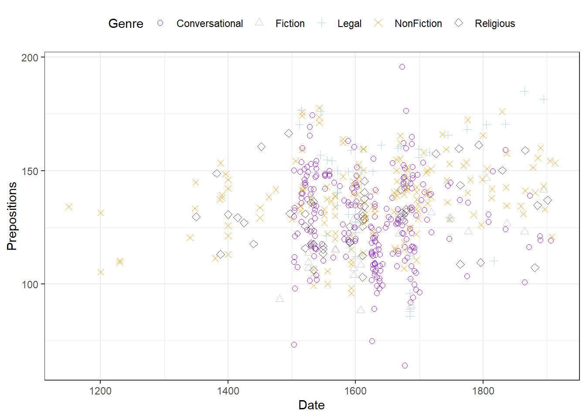
Design Principle: Redundant Encoding
Using both color AND shape to show genre makes your plot more accessible:
- People with color blindness can use shapes
- Black & white printing preserves information
- Easier to distinguish groups when many overlap
Exercise 1.2: Customize Your Plot
Challenge
Modify the plot above to:
1. Change the theme to theme_minimal() or theme_classic()
2. Move the legend to the bottom
3. Try different point sizes (hint: change the size parameter)
Bonus: Try theme_void() - what happens? Why might this be useful (or not)?
Adding Statistical Layers
Trend Lines: Seeing Patterns
Let’s add trend lines to see patterns more clearly:
Code
ggplot(pdat, aes(Date, Prepositions, color = Genre)) +facet_wrap(vars(Genre), ncol =4) +# Separate panel per genregeom_point(alpha =0.5) +# Semi-transparent pointsgeom_smooth(method ="lm", se =FALSE) +# Linear trend linetheme_bw() +theme(legend.position ="none", # No legend needed (titles show genre)axis.text.x =element_text(size =8, angle =90) )
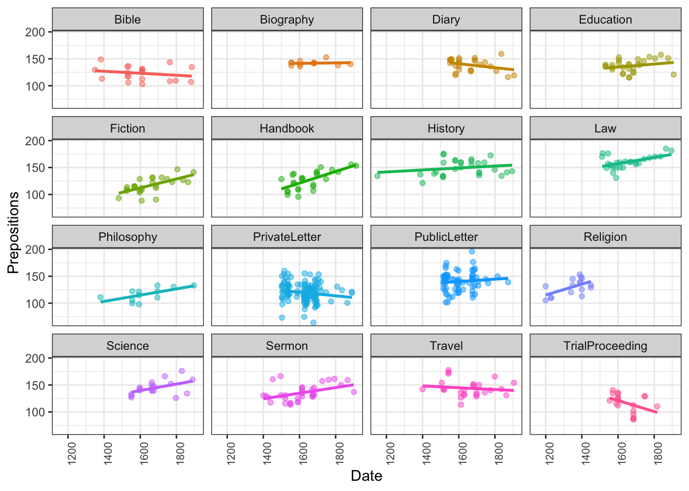
New concepts:
- facet_wrap(): Create separate panels for each group
- alpha = 0.5: Make points semi-transparent (50% opacity)
- geom_smooth(): Add a smoothed trend line
- method = "lm": Use linear regression
- se = FALSE: Don’t show confidence interval
When to Use Facets
Facets (separate panels) work best when:
- You have 3-8 groups to compare
- Patterns within groups are important
- Overlapping points make one plot hard to read
Avoid facets when:
- You need to directly compare values across groups
- You have too many groups (>10)
Exercise 1.3: Exploring Trends
Analysis Task
Using the faceted plot above:
1. Which genre shows the strongest trend over time?
2. Which genres have increasing vs. decreasing preposition use?
3. Try changing method = "lm" to method = "loess" - what’s different?
Discussion: When might a curved line (loess) be more appropriate than a straight line (lm)?
Density Overlays: Alternative to Points
Sometimes you have too many overlapping points. Here’s an alternative:
Code
ggplot(pdat, aes(x = Date, y = Prepositions, color = GenreRedux)) +facet_wrap(vars(GenreRedux), ncol =5) +geom_density_2d() +# 2D density contourstheme_bw() +theme(legend.position ="none",axis.text.x =element_text(size =8, angle =90) )
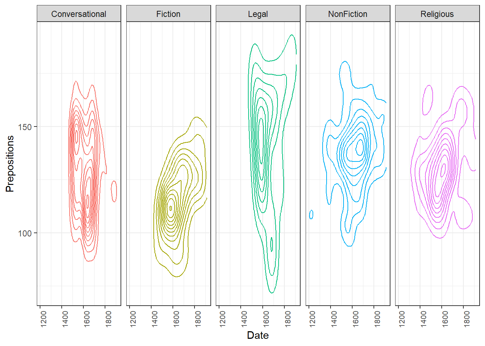
What are density contours? Think of them like topographic map lines - they show where data points are concentrated.
Quick Comparison Table
Visualization
Best For
Limitations
Points
Small-medium datasets, seeing all data
Gets messy with many points
Trend lines
Showing overall patterns
Hides individual variation
Density contours
Large datasets, concentration patterns
Harder to interpret
Hex bins (next!)
Very large datasets
Requires uniform X-Y scales
Hex Plots: Handling Big Data
When you have thousands of points, hex plots show density efficiently:
Code
pdat |>ggplot(aes(x = Date, y = Prepositions)) +geom_hex() +# Hexagonal binningscale_fill_gradient(low ="lightblue", high ="darkblue") +theme_bw()
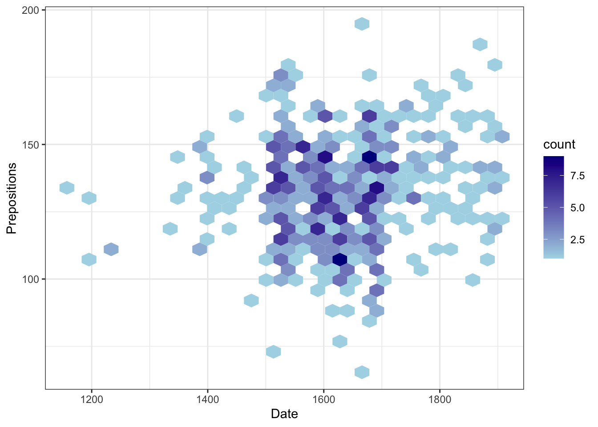
Darker hexagons = more data points in that region.
Exercise 1.4: Comparing Approaches
Synthesis Challenge
Create three plots of the same data:
1. A scatter plot with geom_point()
2. A density plot with geom_density_2d()
3. A hex plot with geom_hex()
Reflect:
- What different insights does each provide?
- Which would you use in a paper? A presentation? An exploratory analysis?
Part 2: Showing Distributions
Understanding distributions helps us see patterns, outliers, and the “shape” of our data.
Density Plots: Smooth Distribution Curves
When to use: To show how values are distributed, especially comparing groups.
Code
ggplot(pdat, aes(Date, fill = Region)) +geom_density(alpha =0.5) +# Semi-transparent densitiesscale_fill_manual(values = clrs[1:2]) +theme_bw() +theme(legend.position =c(0.1, 0.9)) # Position inside plot area
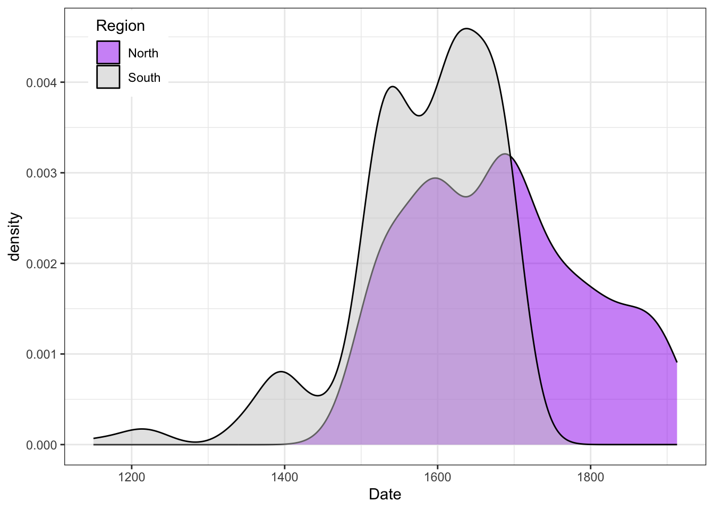
Reading density plots:
- X-axis: Values of the variable (Date)
- Y-axis: Density (higher = more data points)
- Peaks: Most common values
- Width: Spread of the data
Interpreting This Plot
The plot shows that:
- Southern texts continue into the 1800s
- Northern texts end around 1700
- There’s an overlap period where both regions produced texts
Exercise 2.1: Distribution Detective
Investigation
Create a density plot of Prepositions (not Date), colored by GenreRedux.
Questions:
1. Which genre has the highest average preposition frequency?
2. Which genre shows the most variation (widest distribution)?
3. Do any genres have unusual distributions (multiple peaks, asymmetry)?
Histograms: Counting in Bins
Histograms are similar to density plots but show actual counts:
Code
ggplot(pdat, aes(Prepositions)) +geom_histogram(bins =30, # Number of binsfill ="steelblue",color ="white") +# Outline colortheme_bw() +labs(title ="Distribution of Preposition Frequencies",x ="Prepositions per 1,000 words",y ="Count")
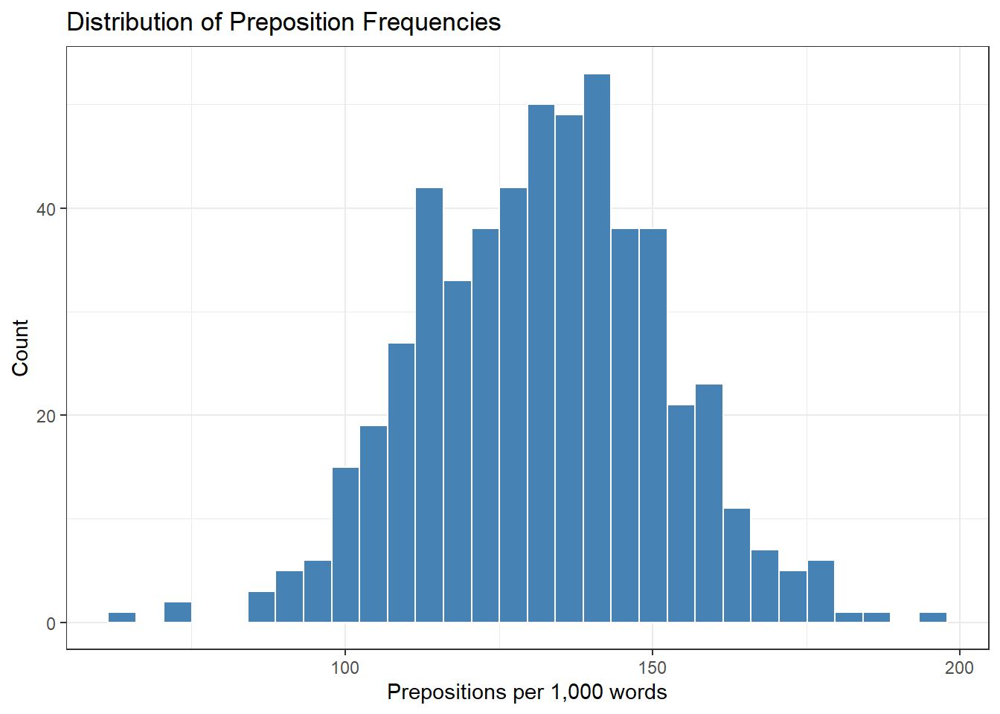
Comparing Groups with Histograms
Code
ggplot(pdat, aes(Prepositions, fill = Region)) +geom_histogram(bins =30, alpha =0.6, position ="identity") +scale_fill_manual(values = clrs[1:2]) +theme_bw() +theme(legend.position ="top")
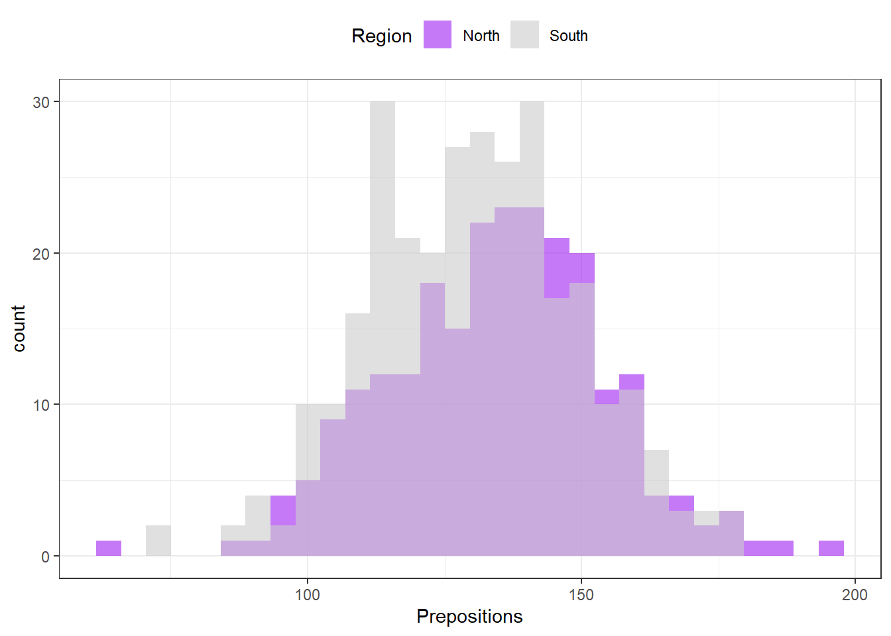
Histogram vs. Bar Plot
Don’t confuse these!
- Histogram: Shows distribution of ONE continuous variable (bins are ranges)
- Bar plot: Shows counts/values for CATEGORIES (bars are discrete groups)
Exercise 2.2: Finding the Right Bin Width
Experiment
Create three histograms of Prepositions with different numbers of bins:
1. bins = 10
2. bins = 30
3. bins = 100
Discuss:
- Too few bins: What information is lost?
- Too many bins: What problems arise?
- How do you choose the “right” number?
Hint: Try the Freedman-Diaconis rule: bins = 30 is often a good starting point.
Ridge Plots: Beautiful Distribution Comparisons
Ridge plots elegantly show multiple distributions:
Code
library(ggridges)pdat |>ggplot(aes(x = Prepositions, y = GenreRedux, fill = GenreRedux)) +geom_density_ridges() +theme_ridges() +theme(legend.position ="none") +labs(y ="", x ="Relative frequency of prepositions")
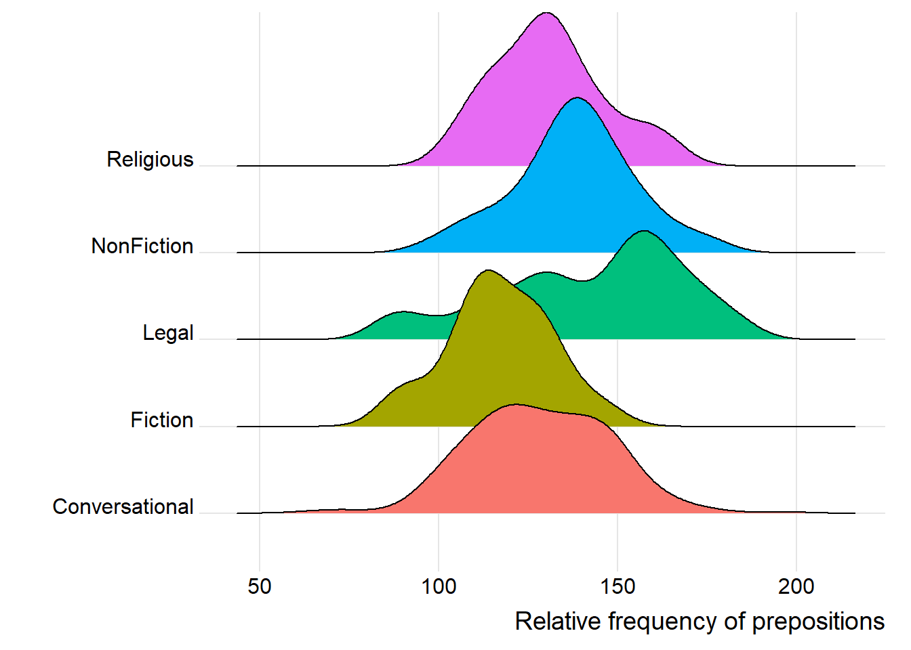
Why ridge plots are great:
- Easy to compare shapes across many groups
- Aesthetically pleasing
- Popular in modern data visualization
Exercise 2.3: Ridge Plot Exploration
Create and Customize
Create a ridge plot of Prepositions by DateRedux (instead of GenreRedux)
Add color with scale_fill_manual(values = clrs)
Try geom_density_ridges(alpha = 0.6, stat = "binline", bins = 20) - what changes?
Bonus: Research what stat = "binline" does. Why might you choose this over smooth densities?
If notches of two boxes don’t overlap → strong evidence groups differ significantly.
This is a visual “rough test” - not a replacement for proper statistics!
Enhanced Boxplots with Individual Points
Code
library(EnvStats)ggplot(pdat, aes(DateRedux, Prepositions, fill = DateRedux, color = DateRedux)) +geom_boxplot(varwidth =TRUE, # Width proportional to sample sizecolor ="black", alpha =0.3) +geom_jitter(alpha =0.3, # Add individual pointsheight =0, # Don't jitter verticallywidth =0.2) +# Small horizontal spreadfacet_grid(~Region) + EnvStats::stat_n_text(y.pos =65) +# Add sample sizestheme_bw() +theme(legend.position ="none") +labs(x ="", y ="Frequency (per 1,000 words)",title ="Preposition Use Across Time and Regions")
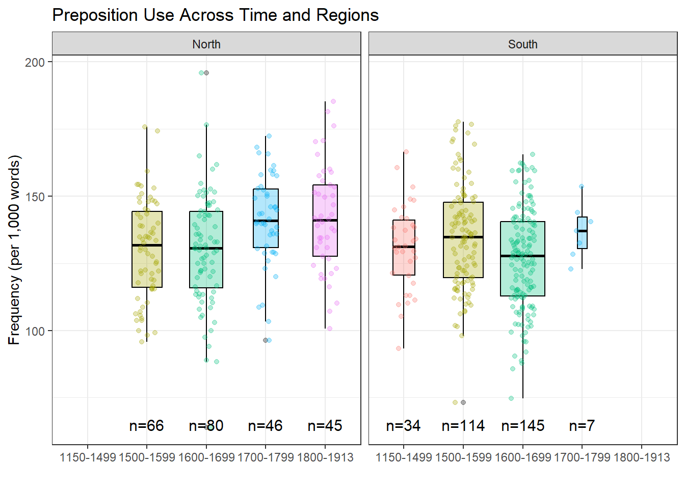
Exercise 2.4: Boxplot Mastery
Advanced Challenge
Create a boxplot of Prepositions by GenreRedux
Add notches
Add jittered points
Color by genre
Add appropriate labels
Analysis questions:
- Which genres show the most variation?
- Are there any outliers? What might they represent?
- Do any genre pairs show non-overlapping notches?
Violin Plots: Best of Both Worlds
Violin plots combine boxplot statistics with density shapes:
Violin plots show:
- Distribution shape (like density plots)
- Median and quartiles (like boxplots)
- Multimodal distributions (multiple peaks)
When to Choose Each Plot Type
Plot Type
Best For
Avoid When
Histogram
Single variable, showing counts
Comparing many groups
Density
Smooth distributions, comparisons
Need exact counts
Ridge
Many groups, emphasis on shapes
<3 groups
Boxplot
Statistical summary, outliers
Distribution shape matters
Violin
Shape + summary, detecting multimodality
Small sample sizes
Exercise 2.5: Distribution Showdown
Comparative Analysis
For the variable Prepositions grouped by GenreRedux, create:
1. A ridge plot
2. A boxplot
3. A violin plot
Reflection:
- What does each reveal that the others don’t?
- If you could only show ONE plot in a paper, which would you choose and why?
- How does sample size affect each plot type?
Part 3: Categorical Data
Working with categorical variables requires different approaches. Let’s explore the options!
ggplot(bdat, aes(DateRedux, Percent, fill = DateRedux)) +geom_bar(stat ="identity") +# Use actual valuesgeom_text(aes(y = Percent -3, # Position labelslabel =paste0(Percent, "%")), color ="white", size =4) +scale_fill_manual(values = clrs) +theme_bw() +theme(legend.position ="none") +labs(x ="Time Period",y ="Percentage of Documents",title ="Distribution of Texts Across Time Periods")
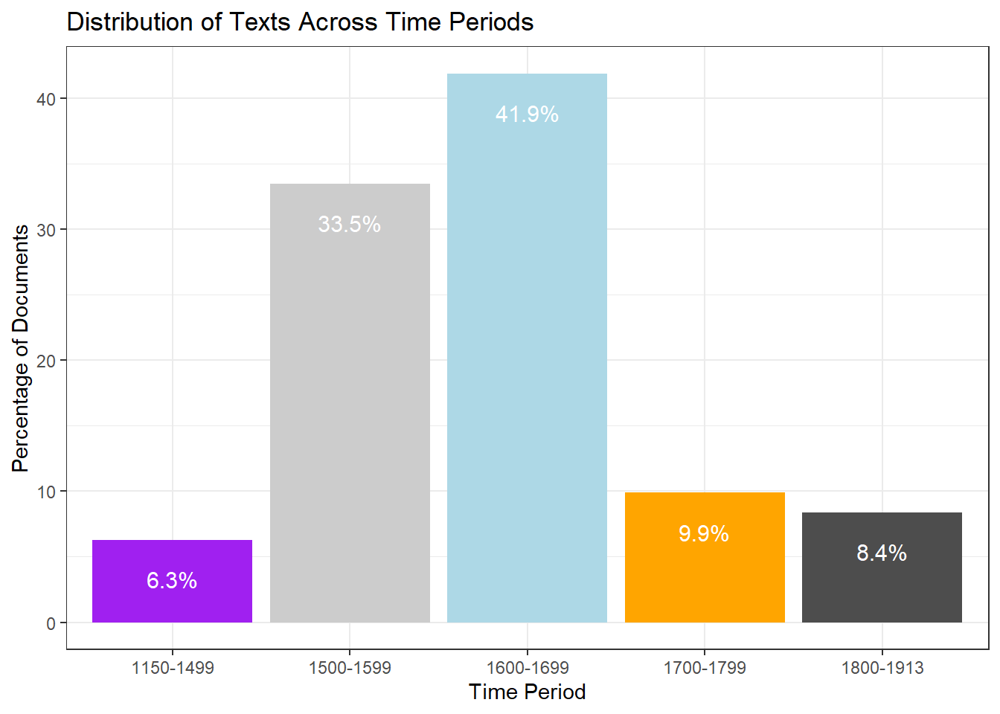
stat = "identity" Explained
geom_bar() by default counts occurrences (stat = "count")
Use stat = "identity" when your data already contains the values to plot
Create a grouped bar plot showing GenreRedux by Region
Create a stacked bar plot of the same data
Create a 100% stacked version
Questions: - Which plot makes it easiest to compare genre frequencies between regions?
- Which shows total document counts best?
- What story does the 100% stacked version tell?
Likert Scale Visualizations
Survey data with Likert scales (Strongly Disagree → Strongly Agree) needs special treatment.
Order matters: Keep response scales in order (don’t sort by frequency)
Neutral center: Place neutral/midpoint in the middle
Diverging colors: Use colors that diverge from center (e.g., Red-Blue)
Group facets: Use for comparing sub-groups
Consider n: Show sample sizes when comparing groups
Exercise 3.2: Survey Visualization Challenge
Real-World Application
Imagine you’ve surveyed 100 students about their experience in an online course. Create visualizations to show:
Overall satisfaction distribution (use ldat as an example)
Comparison between different courses
Which visualization would you use in:
An academic paper?
A presentation to administrators?
A quick report to instructors?
Reflect: How does your choice of visualization affect the “story” the data tells?
Pie Charts: Use With Caution
Design Warning
Pie charts are popular but problematic:
- Hard to compare slice sizes
- Difficult to estimate percentages
- Problematic with many categories
- Bar plots almost always work better
When pies might be okay:
- Very few categories (2-3)
- One category is dominant (~50%+)
- Showing parts of a whole is crucial
Here’s how to make one anyway (for comparison):
Code
# Create data for pie chartpiedata <- bdat |> dplyr::arrange(desc(DateRedux)) |> dplyr::mutate(Position =cumsum(Percent) -0.5* Percent)# Create side-by-side comparisonp1 <-ggplot(bdat, aes("", Percent, fill = DateRedux)) +geom_bar(stat ="identity", position =position_dodge(), width =0.7) +scale_fill_manual(values = clrs) +theme_minimal() +labs(title ="Bar Plot", y ="Percent")p2 <-ggplot(piedata, aes("", Percent, fill = DateRedux)) +geom_bar(stat ="identity", width =1, color ="white") +coord_polar("y", start =0) +scale_fill_manual(values = clrs) +theme_void() +geom_text(aes(y = Position, label =paste0(Percent, "%")), color ="white", size =4) +labs(title ="Pie Chart")gridExtra::grid.arrange(p1, p2, nrow =1)
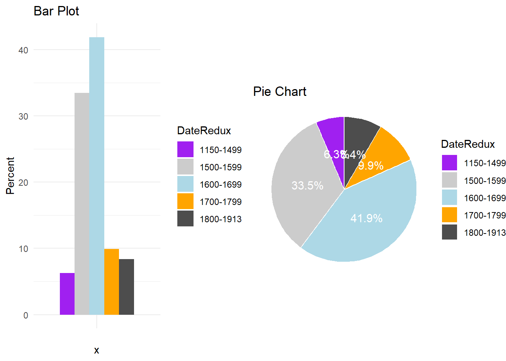
Which is easier to interpret? Why?
Exercise 3.3: Pie vs. Bar Debate
Critical Thinking
Look at the comparison above.
Without looking at the numbers, which time period has the highest percentage in the pie chart?
Try the same question with the bar plot.
Which differences are easier to see?
Challenge: Find a situation where a pie chart might actually be the better choice. Share your reasoning!
Part 4: Advanced Visualizations
Now that you’ve mastered the basics, let’s explore some specialized and advanced plot types.
Heatmaps: Visualizing Matrices
Heatmaps use color to represent values in a matrix or table.
Reading heatmaps:
- Color intensity: Magnitude of value
- Dendrograms (tree diagrams): Show clustering/similarity
- Rows/columns: Can be reordered to reveal patterns
When to Use Heatmaps
Showing patterns in large matrices
Gene expression data
Correlation matrices
Time-series across categories
Survey responses across questions
Avoid when: - Data is sparse (many missing values)
- Categories don’t have natural ordering
- Precise values matter more than patterns
Association Plots: Expected vs. Observed
Association plots show deviations from expected frequencies:
assoc(assocmx, shade =TRUE,main ="Association Plot: Genre × Time Period")
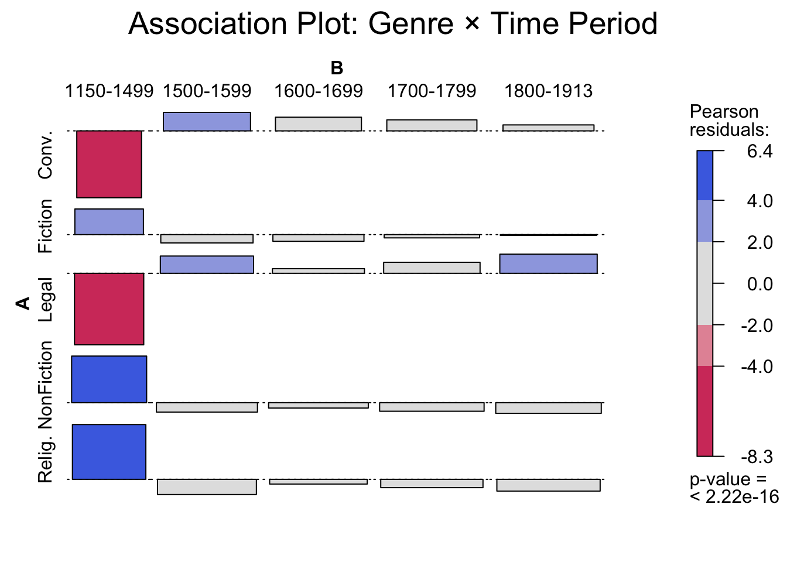
Interpreting association plots:
- Above the line: More than expected
- Below the line: Less than expected
- Blue shading: Significantly more than expected
- Red shading: Significantly less than expected
- Bar width: Contribution to chi-square statistic
Problems:
- Words sizes are hard to compare precisely
- Common words dominate even after removing stop words
- No context (meaning can be misleading)
- Can misrepresent emphasis
Better for:
- Initial exploration
- Public presentations (engaging but not precise)
- Showing overall themes
- Complementing (not replacing) quantitative analysis
Exercise 4.1: Text Analysis
Interpretation Challenge
Looking at the comparison cloud above:
What themes differentiate Clinton from Trump?
What do the largest words in each color suggest about their campaign focus?
What are the limitations of this visualization?
What additional analyses would you want to do?
Bonus: Research “topic modeling” - how might this provide deeper insights than word clouds?
Flags in Visualizations
Adding country flags can make international comparisons more engaging:
flagsdf |>ggplot(aes(x =reorder(Region, Percent), y = Percent, country = country,fill = Kachru)) +geom_bar(stat ="identity") + ggflags::geom_flag(size =5) +geom_text(aes(label = scales::percent(Percent, accuracy =0.1)),hjust =-0.3, size =3) +coord_flip(ylim =c(0, 0.045)) +scale_fill_manual(values =c("lightblue", "coral")) +scale_y_continuous(labels = scales::percent) +theme_minimal() +labs(x ="", y ="Vulgar Language Percentage",title ="Vulgar Language Use by English-Speaking Region",fill ="English Type") +theme(legend.position =c(0.8, 0.3),panel.grid.major =element_blank())
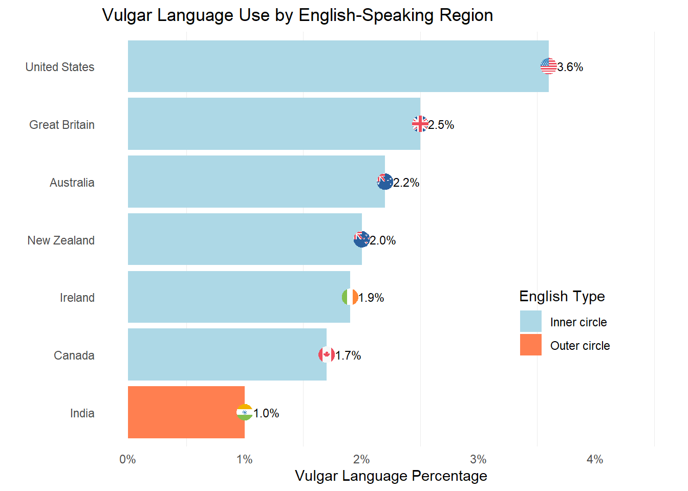
When to Use Flags
Good for:
- International comparisons
- Making data more accessible to general audiences
- Adding visual interest to country-level data
Requirements:
- Need ISO country codes (e.g., “us”, “gb”, “au”)
- Works best with horizontal bar plots
- Don’t overuse - can look unprofessional in some contexts
Part 5: Time Series and Lines
Time series data shows how things change over time. Line graphs are the go-to visualization.
Basic Line Graphs
Code
pdat |> dplyr::group_by(DateRedux, GenreRedux) |> dplyr::summarise(Frequency =mean(Prepositions)) |>ggplot(aes(x = DateRedux, y = Frequency, group = GenreRedux, color = GenreRedux)) +geom_line(size =1.2) +geom_point(size =3) +# Add points at data locationsscale_color_manual(values = clrs) +theme_minimal() +labs(title ="Preposition Frequency Over Time by Genre",x ="Time Period",y ="Mean Frequency (per 1,000 words)",color ="Genre")
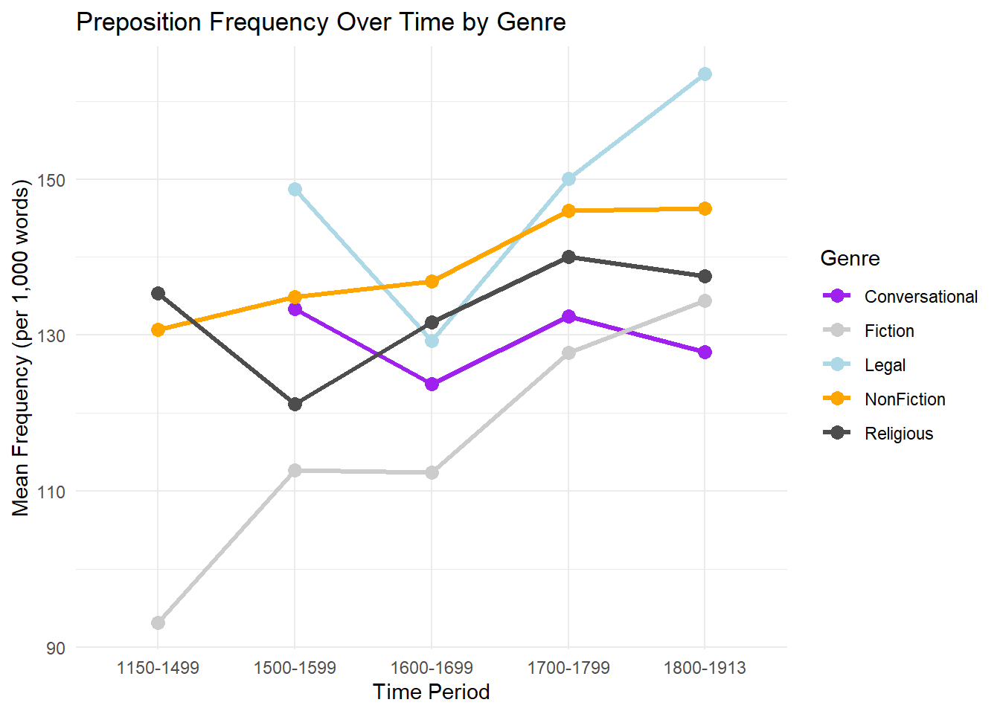
Line Graph Essentials
Points: Show actual data locations
Lines: Show trends/connections
Group aesthetic: Tells ggplot which points to connect
Color: Distinguishes different series
Smoothed Line Graphs
For continuous time variables, smoothing reveals trends:
Code
ggplot(pdat, aes(x = Date, y = Prepositions, color = GenreRedux, linetype = GenreRedux)) +geom_smooth(se =FALSE, size =1.2) +scale_linetype_manual(values =c("solid", "dashed", "dotted", "dotdash", "longdash"),name ="Genre" ) +scale_colour_manual(values = clrs, name ="Genre") +theme_bw() +theme(legend.position ="top") +labs(x ="Year", y ="Relative Frequency\n(per 1,000 words)",title ="Smoothed Trends in Preposition Use")
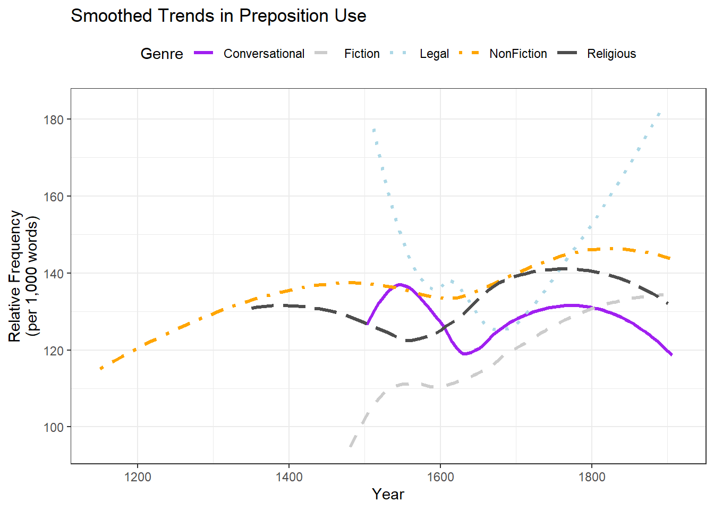
Why smooth?
- Reduces noise from individual data points
- Shows overall trends more clearly
- Uses LOESS (locally weighted smoothing) by default
- Helpful when you have many data points
Exercise 5.1: Trends Over Time
Time Series Analysis
Using the smoothed line graph:
Which genre shows the strongest increasing trend?
Which genre appears most stable over time?
Are there any periods of rapid change?
Try adding se = TRUE to show confidence intervals - what does this add?
Bonus: Create the same plot but facet by Region - do regional patterns differ?
Ribbon Plots: Showing Uncertainty
Ribbon plots display ranges (like min/max or confidence intervals):
Code
pdat |> dplyr::mutate(DateRedux =as.numeric(DateRedux)) |> dplyr::group_by(DateRedux) |> dplyr::summarise(Mean =mean(Prepositions),Min =min(Prepositions),Max =max(Prepositions),SD =sd(Prepositions) ) |>ggplot(aes(x = DateRedux, y = Mean)) +geom_ribbon(aes(ymin = Mean - SD, # ±1 SD ribbonymax = Mean + SD), fill ="lightblue", alpha =0.4) +geom_ribbon(aes(ymin = Min, # Min-max ribbonymax = Max), fill ="gray80", alpha =0.3) +geom_line(size =1.2, color ="darkblue") +scale_x_continuous(labels =names(table(pdat$DateRedux))) +theme_minimal() +labs(title ="Preposition Frequency: Mean with Variation",x ="Time Period",y ="Frequency (per 1,000 words)") + ggplot2::annotate("text", x =2.5, y =180, label ="Gray = Min-Max range", size =3) + ggplot2::annotate("text", x =2.5, y =170, label ="Blue = ±1 SD", size =3)
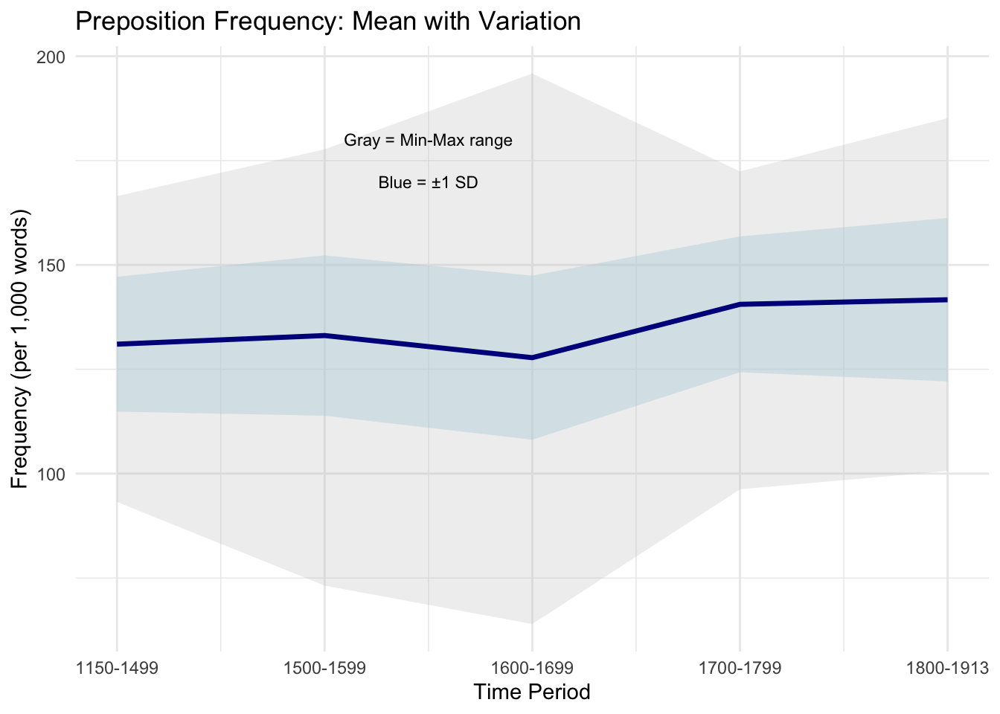
Ribbon plots are excellent for:
- Showing uncertainty
- Displaying confidence intervals
- Visualizing ranges in forecasts
- Comparing variability across time
Part 6: Specialized Plots
Let’s explore some specialized plot types for specific scenarios.
Balloon Plots
Balloon plots show three variables: two categorical and one continuous.
Error bars show:
- Specific statistic (mean, median)
- Specific uncertainty measure (SE, CI, SD)
- Cleaner look for publications
Boxplots show:
- More distributional information
- Quartiles and outliers
- Better for detecting skewness
Exercise 6.1: Comparison Challenge
Statistical Visualization
Create two plots of Prepositions by GenreRedux:
1. A dot plot with error bars (use code above)
2. A boxplot
Compare:
- What does each tell you?
- Which shows outliers better?
- Which would you use to claim “Genre X has higher frequency than Genre Y”?
- When would you choose each?
Comparative Bar Plots with Negatives
Sometimes you want to show deviation from a reference:
Use cases:
- Language learner vs. native speaker comparisons
- Treatment vs. control groups
- Actual vs. expected values
- Change from baseline
Part 7: Publication-Ready Plots
Let’s pull everything together to create publication-quality visualizations.
The Anatomy of a Perfect Plot
A publication-ready plot needs:
Clear title and subtitle
Axis labels with units
Legend (when needed)
Appropriate theme
Readable fonts
Colorblind-friendly palette
Proper sizing
Citation/source (when relevant)
Example: Building a Complete Plot
Code
pdat |> dplyr::group_by(DateRedux, GenreRedux) |> dplyr::summarise(Mean =mean(Prepositions),SE =sd(Prepositions) /sqrt(n()),N =n() ) |>ggplot(aes(x = DateRedux, y = Mean, color = GenreRedux, group = GenreRedux)) +# Data layersgeom_line(size =1.2) +geom_point(size =3) +geom_errorbar(aes(ymin = Mean - SE, ymax = Mean + SE),width =0.2, size =0.8) +# Scalesscale_color_manual(name ="Text Genre",values = clrs,labels =c("Conversational", "Fiction", "Legal", "Non-fiction", "Religious") ) +scale_y_continuous(breaks =seq(100, 200, 20),limits =c(100, 200) ) +# Theme and labelstheme_bw(base_size =14) +theme(legend.position =c(0.15, 0.65),legend.background =element_rect(fill ="white", color ="black"),panel.grid.minor =element_blank(),plot.title =element_text(face ="bold", size =16),plot.subtitle =element_text(size =12, color ="gray30"),plot.caption =element_text(size =10, hjust =0) ) +labs(title ="Historical Trends in Preposition Usage",subtitle ="Analysis of English texts from 1150-1913",x ="Time Period",y ="Mean Frequency (per 1,000 words)",caption ="Source: Penn Parsed Corpora of Historical English (PPC)\nError bars show ±1 SE" )
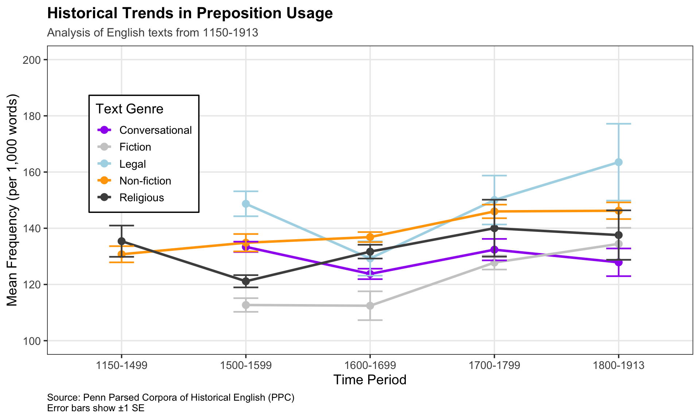
Saving High-Quality Figures
Code
# Save for publicationggsave("preposition_trends.png",width =10, height =6, dpi =300)# Save for presentationggsave("preposition_trends.pdf",width =10, height =6)# Save for webggsave("preposition_trends_web.png",width =10, height =6, dpi =150)
File Format Guide
PNG - Best for:
- Web use
- Presentations
- Figures with photos or complex gradients
- When file size matters
PDF - Best for:
- Publications (journals often require vector)
- Posters
- When scaling is needed
- Print materials
TIFF - Best for:
- Some journal requirements
- Archival purposes
Third variable continuous: Color gradient, bubble size
Many variables: Heatmap, parallel coordinates
Common Scenarios and Solutions
Scenario 1: Survey Results
Data: Likert scale responses from 5 groups
Options:
1. gglikert plot (best for multiple questions)
2. Stacked bar chart (100% for proportions)
3. Faceted bar charts (best for comparing specific responses)
Choose based on:
- Number of questions (many → gglikert)
- Focus on specific categories (faceted bars)
- Showing overall sentiment (stacked bars)
Scenario 2: Experimental Results
Data: Measurements from treatment and control groups
Options:
1. Boxplots (show distributions + outliers)
2. Violin plots (show distribution shape)
3. Bar plot with error bars (show means + uncertainty)
Choose based on:
- Sample size (small → dot plot, large → violin)
- Presence of outliers (boxplot shows these)
- Simplicity needed (bar + error = simplest)
Scenario 3: Geographic Data
Data: Values across countries/regions
Options:
1. Map (when geography matters)
2. Bar plot with flags (when ranking matters)
3. Dot plot (when precision matters)
Choose based on:
- Audience familiarity with geography
- Whether spatial patterns matter
- Number of regions (too many for map)
Exercise 8.1: Plot Selection Challenge
Real-World Scenarios
For each scenario, choose the best plot type and explain why:
Scenario A: You have test scores (0-100) for students in 4 different teaching methods. You want to know if methods differ significantly.
Scenario B: You’ve measured reaction times (milliseconds) in 20 trials for each of 50 participants.
Scenario C: You surveyed 200 people about their agreement (5-point scale) with 10 statements about climate change.
Scenario D: You have daily temperature readings for 5 cities over one year.
For each:
1. What plot type would you use?
2. What alternatives did you consider?
3. What would make you change your choice?
Common Mistakes to Avoid
❌ Mistake 1: 3D Charts
Problem: Hard to read, distort data
Code
# DON'T DO THIS# 3D plots are almost never appropriate for data visualization
Instead: Use 2D charts with proper grouping/faceting
❌ Mistake 2: Dual Y-Axes
Problem: Can be misleading, hard to interpret
Instead:
- Facet plots (separate panels)
- Normalize to same scale
- Use secondary metric only if essential
❌ Mistake 3: Too Many Colors
Problem: Confusing, hard to distinguish
Instead:
- Limit to 5-7 colors
- Use ColorBrewer palettes
- Consider faceting instead
❌ Mistake 4: Truncated Y-Axis (Bar Plots)
Problem: Exaggerates differences
Rule: Bar plots should always start at zero
Exception: Dot plots with error bars can use truncated axes
❌ Mistake 5: Chartjunk
Problem: Decoration distracts from data
Avoid:
- Unnecessary grid lines
- Decorative backgrounds
- 3D effects
- Shadows and gradients (usually)
Instead: Use theme_minimal() or theme_bw() as starting points
The Grammar of Graphics Framework
ggplot2 is based on “The Grammar of Graphics” - understanding this helps you think about plots systematically.
Every plot has: 1. Data - What you’re visualizing 2. Aesthetics (aes) - What goes where (x, y, color, size, etc.) 3. Geometries (geom) - How to display it (points, lines, bars, etc.) 4. Scales - How aesthetics map to visual properties 5. Facets - Subplots 6. Themes - Non-data visual elements
This modular approach lets you build any plot by combining these components!
Final Challenge: Capstone Project
Comprehensive Data Visualization Project
You’ve learned all the essential techniques. Now put them together!
Your Task
Create a complete data story using the pdat dataset (or your own data). Your project should include:
Required Components:
At least 3 different plot types from different sections:
One showing distributions
One showing relationships
One showing categorical comparisons
Publication-ready quality:
Proper titles, labels, and captions
Colorblind-friendly palette
Appropriate themes
Clear legends
A narrative:
2-3 paragraph introduction explaining your question
Transition text between plots explaining what each shows
2-3 paragraph conclusion summarizing findings
Technical elements:
At least one faceted plot
At least one customized plot (colors, themes, labels)
Proper use of aesthetics (color, shape, size)
Example Questions to Explore
How has language use evolved across different genres over time?
Are there regional differences in writing styles?
What patterns exist in the data that might surprise a linguist?
Can you predict time period based on linguistic features?
Deliverables
R Markdown document with all code and narrative
3-5 high-quality figures saved as PNG (300 dpi)
One “highlight figure” that tells your main story
Evaluation Criteria
Your project will be strong if it:
- ✅ Chooses appropriate plot types for each question
- ✅ Uses visualization best practices (clear labels, readable fonts, etc.)
- ✅ Tells a coherent story with the data
- ✅ Shows technical mastery of ggplot2
- ✅ Includes thoughtful interpretation of results
- ✅ Is reproducible (all code runs without errors)
Solutions:
- Facet into multiple panels
- Filter to top N categories
- Use color to highlight key groups
- Try a different plot type (e.g., heatmap instead of scatter)
“Colors look different in different programs”
Solutions:
- Use colorblind-safe palettes
- Test in target environment
- Save as PDF (preserves colors better)
- Specify colors explicitly with hex codes
“Text overlaps in my plot”
Solutions:
- Rotate labels: theme(axis.text.x = element_text(angle = 45, hjust = 1))
- Use ggrepel::geom_text_repel()
- Reduce number of labels
- Increase plot size
- Abbreviate labels
“Error: object not found”
Solutions:
- Check spelling of variable names
- Ensure data is loaded
- Check if library is loaded
- Use str(data) to see variable names
“Plot looks pixelated”
Solutions:
- Increase DPI: ggsave(..., dpi = 300)
- Save as PDF (vector format)
- Increase figure size
- Avoid resizing after saving
Where to Get Help
Stack Overflow: Tag your question with [r] and [ggplot2]
RStudio Community: https://community.rstudio.com/
R for Data Science Slack: https://www.rfordatasci.com/
Twitter #rstats: Active, helpful community
Practice Datasets
To continue learning, try these datasets:
Built into R:
- mpg - Fuel economy data
- diamonds - Diamond prices and properties
- economics - US economic time series
- midwest - Demographic data
From packages:
- gapminder - Global health and wealth
- nycflights13 - Flight data
- fivethirtyeight - Data from news articles
- palmerpenguins - Alternative to iris dataset
Schweinberger, Martin. 2025. Mastering Data Visualization with R. Brisbane: The University of Queensland. url: https://ladal.edu.au/tutorials/dviz/dviz.html (Version 2025.02.07).
@manual{schweinberger2026dviz,
author = {Schweinberger, Martin},
title = {Mastering Data Visualization with R},
note = {https://ladal.edu.au/tutorials/dviz/dviz.html},
year = {2026},
organization = {The University of Queensland, School of Languages and Cultures},
address = {Brisbane},
edition = {2026.02.07}
}
This tutorial was revised and substantially expanded with the assistance of Claude (claude.ai), a large language model created by Anthropic. Claude was used to restructure the document into Quarto format, write the quiz questions, and write detailed answer explanations. All content was reviewed, edited, and approved by the author (Martin Schweinberger), who takes full responsibility for its accuracy.
Acknowledgments
This tutorial builds on the excellent work of the R and tidyverse communities. Special thanks to:
Remember: The best visualization is the one that clearly communicates your message to your audience! 📊
Source Code
---title: "Mastering Data Visualization with R"author: "Martin Schweinberger"format: html: toc: true toc-depth: 3 code-fold: show code-tools: true theme: cosmo---{ width=100% }# Welcome! {.unnumbered}::: {.callout-tip}## What You'll LearnBy the end of this tutorial, you will be able to:- Choose the right visualization type for your data and research question- Create publication-quality plots using ggplot2- Customize visualizations to tell compelling data stories- Apply best practices for effective data communication- Build complex, multi-layered visualizations step-by-step:::## Who This Tutorial Is ForThis tutorial is designed for:- **Beginners** who want to learn data visualization from scratch- **Intermediate R users** looking to enhance their plotting skills- **Researchers** who need to create professional visualizations for publications- Anyone interested in telling stories with data## Prerequisites<div class="warning"><span><p style='margin-top:1em; text-align:center'>**Before starting, make sure you're familiar with:**<br></p><p style='margin-top:1em; text-align:left'><ul> <li>[Getting started with R](/tutorials/intror/intror.html) </li> <li>[Loading, saving, and generating data in R](/tutorials/load/load.html) </li> <li>[Handling Tables in R](/tutorials/table/table.html) </li></ul></p></span></div>## Tutorial StructureThis tutorial follows a **learn-by-doing** approach with three main components:1. **Concept explanations** - Understanding when and why to use each visualization2. **Step-by-step examples** - Building plots from simple to complex3. **Hands-on exercises** - Practice what you've learned immediately::: {.callout-note}## Learning PhilosophyRather than showing you every possible option at once, we'll build complexity gradually. Each section introduces new concepts that build on what you've learned before.:::# Setup and Preparation {#setup}## Installing Required PackagesFirst, let's install all the packages we'll need. Run this code once - it may take 3-5 minutes:```{r prep1, echo=T, eval = F}# Install core packagesinstall.packages("dplyr") # Data manipulationinstall.packages("stringr") # String processinginstall.packages("ggplot2") # Core plotting packageinstall.packages("tidyr") # Data reshapinginstall.packages("scales") # Scale functions for ggplot2# Install specialized plotting packagesinstall.packages("ggridges") # Ridge plotsinstall.packages("ggstats") # Statistical plotsinstall.packages("ggstatsplot")# Statistical visualizationsinstall.packages("EnvStats") # Environmental statistics# Install packages for specific plot typesinstall.packages("likert") # Likert scale visualizationsinstall.packages("vcd") # Categorical data visualizationinstall.packages("hexbin") # Hexagonal binninginstall.packages("gridExtra") # Arranging multiple plots# Install utility packagesinstall.packages("flextable") # Pretty tablesinstall.packages("devtools") # For installing from GitHub# Install ggflags from GitHub (for country flags in plots)devtools::install_github("jimjam-slam/ggflags")```## Loading PackagesNow activate the packages for this session:```{r prep2, message=FALSE, warning=FALSE, class.source='klippy'}library(dplyr)library(stringr)library(ggplot2)library(tidyr)library(flextable)library(hexbin)library(gridExtra)library(ggflags)library(ggstats)library(ggridges)library(EnvStats)library(scales)```::: {.callout-tip}## Pro TipCreate a standard R script with these library calls that you can run at the start of each data visualization session!:::## Loading the DataWe'll work with a dataset about preposition usage in historical English texts:```{r prep4}# Load datapdat <- base::readRDS("tutorials/dviz/data/pvd.rda", "rb")```Let's examine the structure of our data:```{r prep5, echo = F}# Display first 15 rowspdat |> as.data.frame() |> head(15) |> flextable::flextable() |> flextable::set_table_properties(width = .95, layout = "autofit") |> flextable::theme_zebra() |> flextable::fontsize(size = 12) |> flextable::fontsize(size = 12, part = "header") |> flextable::align_text_col(align = "center") |> flextable::set_caption(caption = "First 15 rows of the pdat data.") |> flextable::border_outer()```### Understanding Our DataOur dataset contains:- **Date**: When the text was written- **Genre**: Type of text (Fiction, Legal, Religious, etc.)- **Text**: Name of the source text- **Prepositions**: Relative frequency of prepositions (per 1,000 words)- **Region**: Geographic location (North/South)- **GenreRedux**: Simplified genre categories- **DateRedux**: Time periods (1150-1499, 1500-1599, etc.)## Setting Up a Color PaletteLet's create a consistent color scheme for our visualizations:```{r prep6}# Define custom colorsclrs <- c("purple", "gray80", "lightblue", "orange", "gray30")```::: {.callout-note}## Why Custom Colors?Using a consistent color palette across all your visualizations: - Creates a professional, cohesive look - Makes your work more recognizable - Ensures color accessibility - Saves time (no need to specify colors each time) Explore more color options: - [R Color Reference](http://www.stat.columbia.edu/~tzheng/files/Rcolor.pdf)- [R Color Palettes](https://www.datanovia.com/en/blog/top-r-color-palettes-to-know-for-great-data-visualization/):::---# Part 1: Exploring Relationships {#part1}In this section, we'll learn to visualize relationships between variables. We'll start simple and gradually add complexity.## Scatter Plots: The Foundation {#scatter}**When to use scatter plots:** To show the relationship between two continuous (numeric) variables.**Research questions answered:** - Is there a relationship between X and Y? - Does the relationship vary by group? - Are there outliers or unusual patterns? ### Building Your First Scatter PlotLet's create a basic scatter plot step by step:```{r scatter_basic, results = 'asis', message=FALSE, warning=FALSE}# Step 1: Most basic scatter plotggplot(data = pdat, # Our dataset aes(x = Date, # X-axis variable y = Prepositions)) + # Y-axis variable geom_point() # Add points```::: {.callout-note}## Understanding the Code - `ggplot()`: Initialize the plot - `aes()`: Define "aesthetics" (what goes where) - `geom_point()`: Add a layer of points - `+`: Add layers together (like building blocks!) :::### Exercise 1.1: Your First Plot {.exercise}::: {.callout-warning icon=false}## Try It Yourself!Create a scatter plot showing the relationship between `Date` (x-axis) and `Prepositions` (y-axis) using the code above. **Questions to consider:** 1. What pattern do you see? 2. Are prepositions becoming more or less frequent over time? 3. Is the relationship linear or does it curve? :::### Adding Color: Visualizing GroupsNow let's add color to distinguish between genres:```{r scatter_color, eval = T}ggplot(pdat, aes(x = Date, y = Prepositions, color = GenreRedux)) + # Color by genre geom_point() + theme_bw() # Clean black & white theme```**What changed?** - `color = GenreRedux` inside `aes()` colors points by genre - `theme_bw()` gives us a cleaner, professional look - ggplot2 automatically creates a legend! ### Customizing Colors and ShapesLet's make our plot publication-ready:```{r scatter_custom, eval = T}ggplot(pdat, aes(Date, Prepositions, color = GenreRedux, shape = GenreRedux)) + # Different shapes for genres geom_point(size = 2) + # Larger points scale_shape_manual( name = "Genre", values = 1:5 # Different point shapes ) + scale_color_manual( name = "Genre", values = clrs # Our custom colors ) + theme_bw() + theme(legend.position = "top") # Move legend to top```::: {.callout-tip}## Design Principle: Redundant EncodingUsing both color AND shape to show genre makes your plot more accessible: - People with color blindness can use shapes - Black & white printing preserves information - Easier to distinguish groups when many overlap :::### Exercise 1.2: Customize Your Plot {.exercise}::: {.callout-warning icon=false}## ChallengeModify the plot above to: 1. Change the theme to `theme_minimal()` or `theme_classic()`2. Move the legend to the bottom 3. Try different point sizes (hint: change the `size` parameter) **Bonus:** Try `theme_void()` - what happens? Why might this be useful (or not)?:::## Adding Statistical Layers### Trend Lines: Seeing PatternsLet's add trend lines to see patterns more clearly:```{r scatter_trends, message=F, warning=F}ggplot(pdat, aes(Date, Prepositions, color = Genre)) + facet_wrap(vars(Genre), ncol = 4) + # Separate panel per genre geom_point(alpha = 0.5) + # Semi-transparent points geom_smooth(method = "lm", se = FALSE) + # Linear trend line theme_bw() + theme( legend.position = "none", # No legend needed (titles show genre) axis.text.x = element_text(size = 8, angle = 90) )```**New concepts:** - `facet_wrap()`: Create separate panels for each group - `alpha = 0.5`: Make points semi-transparent (50% opacity) - `geom_smooth()`: Add a smoothed trend line - `method = "lm"`: Use linear regression - `se = FALSE`: Don't show confidence interval ::: {.callout-note}## When to Use Facets Facets (separate panels) work best when: - You have 3-8 groups to compare - Patterns within groups are important - Overlapping points make one plot hard to read Avoid facets when: - You need to directly compare values across groups - You have too many groups (>10) :::### Exercise 1.3: Exploring Trends {.exercise}::: {.callout-warning icon=false}## Analysis TaskUsing the faceted plot above: 1. Which genre shows the strongest trend over time? 2. Which genres have increasing vs. decreasing preposition use? 3. Try changing `method = "lm"` to `method = "loess"` - what's different? **Discussion:** When might a curved line (loess) be more appropriate than a straight line (lm)?:::## Density Overlays: Alternative to PointsSometimes you have too many overlapping points. Here's an alternative:```{r scatter_density, eval = T}ggplot(pdat, aes(x = Date, y = Prepositions, color = GenreRedux)) + facet_wrap(vars(GenreRedux), ncol = 5) + geom_density_2d() + # 2D density contours theme_bw() + theme( legend.position = "none", axis.text.x = element_text(size = 8, angle = 90) )```**What are density contours?**Think of them like topographic map lines - they show where data points are concentrated.### Quick Comparison Table| Visualization | Best For | Limitations ||--------------|----------|-------------|| Points | Small-medium datasets, seeing all data | Gets messy with many points || Trend lines | Showing overall patterns | Hides individual variation || Density contours | Large datasets, concentration patterns | Harder to interpret || Hex bins (next!) | Very large datasets | Requires uniform X-Y scales |## Hex Plots: Handling Big DataWhen you have thousands of points, hex plots show density efficiently:```{r hex_plot, results = 'asis', message=FALSE, warning=FALSE}pdat |> ggplot(aes(x = Date, y = Prepositions)) + geom_hex() + # Hexagonal binning scale_fill_gradient(low = "lightblue", high = "darkblue") + theme_bw()```Darker hexagons = more data points in that region.### Exercise 1.4: Comparing Approaches {.exercise}::: {.callout-warning icon=false}## Synthesis ChallengeCreate three plots of the same data: 1. A scatter plot with `geom_point()`2. A density plot with `geom_density_2d()`3. A hex plot with `geom_hex()`**Reflect:** - What different insights does each provide? - Which would you use in a paper? A presentation? An exploratory analysis? :::---# Part 2: Showing Distributions {#part2}Understanding distributions helps us see patterns, outliers, and the "shape" of our data.## Density Plots: Smooth Distribution Curves {#density}**When to use:** To show how values are distributed, especially comparing groups.```{r density_basic, results = 'asis', message=FALSE, warning=FALSE}ggplot(pdat, aes(Date, fill = Region)) + geom_density(alpha = 0.5) + # Semi-transparent densities scale_fill_manual(values = clrs[1:2]) + theme_bw() + theme(legend.position = c(0.1, 0.9)) # Position inside plot area```**Reading density plots:** - X-axis: Values of the variable (Date) - Y-axis: Density (higher = more data points) - Peaks: Most common values - Width: Spread of the data ::: {.callout-tip}## Interpreting This PlotThe plot shows that: - Southern texts continue into the 1800s - Northern texts end around 1700 - There's an overlap period where both regions produced texts :::### Exercise 2.1: Distribution Detective {.exercise}::: {.callout-warning icon=false}## InvestigationCreate a density plot of `Prepositions` (not `Date`), colored by `GenreRedux`.**Questions:** 1. Which genre has the highest average preposition frequency? 2. Which genre shows the most variation (widest distribution)? 3. Do any genres have unusual distributions (multiple peaks, asymmetry)? :::## Histograms: Counting in Bins {#histograms}Histograms are similar to density plots but show actual counts:```{r hist_basic, message=F, warning=F}ggplot(pdat, aes(Prepositions)) + geom_histogram(bins = 30, # Number of bins fill = "steelblue", color = "white") + # Outline color theme_bw() + labs(title = "Distribution of Preposition Frequencies", x = "Prepositions per 1,000 words", y = "Count")```### Comparing Groups with Histograms```{r hist_groups, message=F, warning=F}ggplot(pdat, aes(Prepositions, fill = Region)) + geom_histogram(bins = 30, alpha = 0.6, position = "identity") + scale_fill_manual(values = clrs[1:2]) + theme_bw() + theme(legend.position = "top")```::: {.callout-important}## Histogram vs. Bar Plot**Don't confuse these!** - **Histogram**: Shows distribution of ONE continuous variable (bins are ranges) - **Bar plot**: Shows counts/values for CATEGORIES (bars are discrete groups) :::### Exercise 2.2: Finding the Right Bin Width {.exercise}::: {.callout-warning icon=false}## ExperimentCreate three histograms of `Prepositions` with different numbers of bins: 1. `bins = 10`2. `bins = 30`3. `bins = 100`**Discuss:** - Too few bins: What information is lost? - Too many bins: What problems arise? - How do you choose the "right" number? **Hint:** Try the Freedman-Diaconis rule: `bins = 30` is often a good starting point.:::## Ridge Plots: Beautiful Distribution Comparisons {#ridges}Ridge plots elegantly show multiple distributions:```{r ridge_basic, results = 'asis', message=FALSE, warning=FALSE}library(ggridges)pdat |> ggplot(aes(x = Prepositions, y = GenreRedux, fill = GenreRedux)) + geom_density_ridges() + theme_ridges() + theme(legend.position = "none") + labs(y = "", x = "Relative frequency of prepositions")```**Why ridge plots are great:** - Easy to compare shapes across many groups - Aesthetically pleasing - Popular in modern data visualization ### Exercise 2.3: Ridge Plot Exploration {.exercise}::: {.callout-warning icon=false}## Create and Customize1. Create a ridge plot of `Prepositions` by `DateRedux` (instead of `GenreRedux`) 2. Add color with `scale_fill_manual(values = clrs)`3. Try `geom_density_ridges(alpha = 0.6, stat = "binline", bins = 20)` - what changes? **Bonus:** Research what `stat = "binline"` does. Why might you choose this over smooth densities?:::## Boxplots: The Statistical Summary {#boxplots}Boxplots show five key statistics at once:```{r box_basic, results = 'asis', message=FALSE, warning=FALSE}ggplot(pdat, aes(DateRedux, Prepositions, fill = DateRedux)) + geom_boxplot() + scale_fill_manual(values = clrs) + theme_bw() + theme(legend.position = "none") + labs(x = "Time Period", y = "Prepositions (per 1,000 words)")```### Reading a Boxplot![Anatomy of a boxplot - showing median, quartiles, whiskers, and outliers]- **Line in box**: Median (50th percentile) - **Box**: Interquartile range (IQR) - middle 50% of data - **Whiskers**: Extend to 1.5 × IQR - **Dots**: Outliers beyond whiskers ### Notched Boxplots: Testing Differences```{r box_notched, results = 'asis', message=FALSE, warning=FALSE}ggplot(pdat, aes(DateRedux, Prepositions, fill = DateRedux)) + geom_boxplot(notch = TRUE, # Add notches outlier.colour = "red", outlier.shape = 2, outlier.size = 3) + scale_fill_manual(values = clrs) + theme_bw() + theme(legend.position = "none")```::: {.callout-important}## The Notch TestIf notches of two boxes don't overlap → strong evidence groups differ significantly.This is a visual "rough test" - not a replacement for proper statistics!:::### Enhanced Boxplots with Individual Points```{r box_enhanced, results = 'asis', message=FALSE, warning=FALSE}library(EnvStats)ggplot(pdat, aes(DateRedux, Prepositions, fill = DateRedux, color = DateRedux)) + geom_boxplot(varwidth = TRUE, # Width proportional to sample size color = "black", alpha = 0.3) + geom_jitter(alpha = 0.3, # Add individual points height = 0, # Don't jitter vertically width = 0.2) + # Small horizontal spread facet_grid(~Region) + EnvStats::stat_n_text(y.pos = 65) + # Add sample sizes theme_bw() + theme(legend.position = "none") + labs(x = "", y = "Frequency (per 1,000 words)", title = "Preposition Use Across Time and Regions")```### Exercise 2.4: Boxplot Mastery {.exercise}::: {.callout-warning icon=false}## Advanced Challenge1. Create a boxplot of `Prepositions` by `GenreRedux`2. Add notches 3. Add jittered points 4. Color by genre 5. Add appropriate labels **Analysis questions:** - Which genres show the most variation? - Are there any outliers? What might they represent? - Do any genre pairs show non-overlapping notches? :::## Violin Plots: Best of Both WorldsViolin plots combine boxplot statistics with density shapes:```{r violin_basic, results = 'asis', message=FALSE, warning=FALSE}ggplot(pdat, aes(DateRedux, Prepositions, fill = DateRedux)) + geom_violin(trim = FALSE, alpha = 0.5) + scale_fill_manual(values = clrs) + theme_bw() + theme(legend.position = "none")```**Violin plots show:** - Distribution shape (like density plots) - Median and quartiles (like boxplots) - Multimodal distributions (multiple peaks) ### When to Choose Each Plot Type| Plot Type | Best For | Avoid When ||-----------|----------|-----------|| Histogram | Single variable, showing counts | Comparing many groups || Density | Smooth distributions, comparisons | Need exact counts || Ridge | Many groups, emphasis on shapes | <3 groups || Boxplot | Statistical summary, outliers | Distribution shape matters || Violin | Shape + summary, detecting multimodality | Small sample sizes |### Exercise 2.5: Distribution Showdown {.exercise}::: {.callout-warning icon=false}## Comparative AnalysisFor the variable `Prepositions` grouped by `GenreRedux`, create: 1. A ridge plot 2. A boxplot 3. A violin plot **Reflection:** - What does each reveal that the others don't? - If you could only show ONE plot in a paper, which would you choose and why? - How does sample size affect each plot type? :::---# Part 3: Categorical Data {#part3}Working with categorical variables requires different approaches. Let's explore the options!## Bar Plots: The Workhorse of Categories {#barplots}First, let's create summary data:```{r bar_data, message=F, warning=F}bdat <- pdat |> dplyr::mutate(DateRedux = factor(DateRedux)) |> group_by(DateRedux) |> dplyr::summarise(Frequency = n()) |> dplyr::mutate(Percent = round(Frequency / sum(Frequency) * 100, 1))# View the databdat```### Basic Bar Plot```{r bar_basic, results='hide', message=FALSE, warning=FALSE}ggplot(bdat, aes(DateRedux, Percent, fill = DateRedux)) + geom_bar(stat = "identity") + # Use actual values geom_text(aes(y = Percent - 3, # Position labels label = paste0(Percent, "%")), color = "white", size = 4) + scale_fill_manual(values = clrs) + theme_bw() + theme(legend.position = "none") + labs(x = "Time Period", y = "Percentage of Documents", title = "Distribution of Texts Across Time Periods")```::: {.callout-note}## `stat = "identity"` Explained - `geom_bar()` by default counts occurrences (`stat = "count"`) - Use `stat = "identity"` when your data already contains the values to plot - Think: "plot the values AS IS (their identity)" :::### Grouped Bar Plots```{r bar_grouped, results='hide', message=FALSE, warning=FALSE}ggplot(pdat, aes(Region, fill = DateRedux)) + geom_bar(position = position_dodge(), # Side-by-side bars stat = "count") + scale_fill_manual(values = clrs) + theme_bw() + labs(x = "Region", y = "Number of Documents", fill = "Time Period")```**When to use grouped bars:** - Comparing sub-categories within main categories - 2-3 sub-groups work best - Direct comparison between groups is important ### Stacked Bar Plots```{r bar_stacked, results='hide', message=FALSE, warning=FALSE}ggplot(pdat, aes(DateRedux, fill = GenreRedux)) + geom_bar(stat = "count") + scale_fill_manual(values = clrs) + theme_bw() + labs(x = "Time Period", y = "Number of Documents", fill = "Genre", title = "Genre Composition Across Time Periods")```### Normalized Stacked Bars (100%)```{r bar_normalized, results='hide', message=FALSE, warning=FALSE}ggplot(pdat, aes(DateRedux, fill = GenreRedux)) + geom_bar(stat = "count", position = "fill") + scale_fill_manual(values = clrs) + scale_y_continuous(labels = scales::percent) + # Format as percentages theme_bw() + labs(x = "Time Period", y = "Proportion of Documents", fill = "Genre", title = "Relative Genre Composition Over Time")```::: {.callout-tip}## Choosing Bar Plot Types**Grouped bars** when: - Comparing specific values across groups - You have 2-3 subgroups - Actual counts matter **Stacked bars** when: - Showing composition (parts of a whole) - Total amount is important - You have 3-6 subgroups **100% stacked** when: - Only proportions matter (not absolute values) - Emphasizing compositional changes :::### Exercise 3.1: Bar Plot Practice {.exercise}::: {.callout-warning icon=false}## Build Your Skills1. Create a grouped bar plot showing `GenreRedux` by `Region`2. Create a stacked bar plot of the same data 3. Create a 100% stacked version **Questions:**- Which plot makes it easiest to compare genre frequencies between regions? - Which shows total document counts best? - What story does the 100% stacked version tell? :::## Likert Scale Visualizations {#likert}Survey data with Likert scales (Strongly Disagree → Strongly Agree) needs special treatment.First, let's load some survey data:```{r likert_data}ldat <- base::readRDS("tutorials/dviz/data/lid.rda", "rb")head(ldat)```### Method 1: Grouped Bar Plot```{r likert_grouped, echo=T, message=FALSE, warning=FALSE}# Summarize the datanlik <- ldat |> dplyr::group_by(Course, Satisfaction) |> dplyr::summarize(Frequency = n())# Create grouped bar plotggplot(nlik, aes(Satisfaction, Frequency, fill = Course)) + geom_bar(stat = "identity", position = position_dodge()) + scale_fill_manual(values = clrs[1:3]) + geom_text(aes(label = Frequency), vjust = 1.6, color = "white", position = position_dodge(0.9), size = 3.5) + scale_x_discrete( limits = 1:5, labels = c("Very\nDissatisfied", "Dissatisfied", "Neutral", "Satisfied", "Very\nSatisfied") ) + theme_bw() + labs(title = "Student Satisfaction by Course", x = "Satisfaction Level", y = "Number of Students")```### Method 2: Cumulative Line Graph```{r likert_cumulative, warning=F, message=F}ggplot(ldat, aes(x = Satisfaction, color = Course)) + geom_step(aes(y = ..y..), stat = "ecdf", size = 1.5) + scale_colour_manual(values = clrs[1:3]) + scale_x_discrete( limits = 1:5, labels = c("Very\nDissatisfied", "Dissatisfied", "Neutral", "Satisfied", "Very\nSatisfied") ) + theme_bw() + labs(title = "Cumulative Satisfaction Distribution", y = "Cumulative Proportion", x = "Satisfaction Level")```::: {.callout-note}## Reading Cumulative Plots- Steeper lines = responses concentrated in that range - Higher line at left = more dissatisfied responses - Lines that cross = different distribution patterns - Gap between lines = difference in satisfaction :::### Method 3: gglikert (Modern Approach)```{r likert_gglikert, warning=F, message=F}# Load survey data with multiple questionssdat <- base::readRDS("tutorials/dviz/data/sdd.rda", "rb")# Clean column namescolnames(sdat)[3:ncol(sdat)] <- paste0( "Q", str_pad(1:10, 2, "left", "0"), ": ", colnames(sdat)[3:ncol(sdat)]) |> stringr::str_replace_all("\\.", " ") |> stringr::str_squish() |> stringr::str_replace_all("$", "?")# Convert to factors with labelslbs <- c("Disagree", "Somewhat\nDisagree", "Neutral", "Somewhat\nAgree", "Agree")survey <- sdat |> dplyr::mutate_if(is.character, factor) |> dplyr::mutate_if(is.numeric, factor, levels = 1:5, labels = lbs) |> drop_na() |> as.data.frame()# Create gglikert plotsurvey |> dplyr::select(matches("01|02|03|04")) |> gglikert(labels_size = 2.5, add_labels = FALSE) + ggtitle("Survey Responses to Selected Questions") + scale_fill_brewer(palette = "RdBu")```::: {.callout-tip}## Likert Best Practices1. **Order matters**: Keep response scales in order (don't sort by frequency) 2. **Neutral center**: Place neutral/midpoint in the middle 3. **Diverging colors**: Use colors that diverge from center (e.g., Red-Blue) 4. **Group facets**: Use for comparing sub-groups 5. **Consider n**: Show sample sizes when comparing groups :::### Exercise 3.2: Survey Visualization Challenge {.exercise}::: {.callout-warning icon=false}## Real-World ApplicationImagine you've surveyed 100 students about their experience in an online course. Create visualizations to show:1. Overall satisfaction distribution (use `ldat` as an example) 2. Comparison between different courses 3. Which visualization would you use in: - An academic paper? - A presentation to administrators? - A quick report to instructors? **Reflect:** How does your choice of visualization affect the "story" the data tells?:::## Pie Charts: Use With Caution {#piecharts}::: {.callout-warning}## Design WarningPie charts are popular but problematic: - Hard to compare slice sizes - Difficult to estimate percentages - Problematic with many categories - Bar plots almost always work better **When pies might be okay:** - Very few categories (2-3) - One category is dominant (~50%+) - Showing parts of a whole is crucial :::Here's how to make one anyway (for comparison):```{r pie_comparison, message=F, warning=F}# Create data for pie chartpiedata <- bdat |> dplyr::arrange(desc(DateRedux)) |> dplyr::mutate(Position = cumsum(Percent) - 0.5 * Percent)# Create side-by-side comparisonp1 <- ggplot(bdat, aes("", Percent, fill = DateRedux)) + geom_bar(stat = "identity", position = position_dodge(), width = 0.7) + scale_fill_manual(values = clrs) + theme_minimal() + labs(title = "Bar Plot", y = "Percent")p2 <- ggplot(piedata, aes("", Percent, fill = DateRedux)) + geom_bar(stat = "identity", width = 1, color = "white") + coord_polar("y", start = 0) + scale_fill_manual(values = clrs) + theme_void() + geom_text(aes(y = Position, label = paste0(Percent, "%")), color = "white", size = 4) + labs(title = "Pie Chart")gridExtra::grid.arrange(p1, p2, nrow = 1)```**Which is easier to interpret? Why?**### Exercise 3.3: Pie vs. Bar Debate {.exercise}::: {.callout-warning icon=false}## Critical ThinkingLook at the comparison above.1. Without looking at the numbers, which time period has the highest percentage in the pie chart? 2. Try the same question with the bar plot. 3. Which differences are easier to see? **Challenge:** Find a situation where a pie chart might actually be the better choice. Share your reasoning!:::---# Part 4: Advanced Visualizations {#part4}Now that you've mastered the basics, let's explore some specialized and advanced plot types.## Heatmaps: Visualizing Matrices {#heatmaps}Heatmaps use color to represent values in a matrix or table.```{r heatmap_prep, results = 'asis', message=FALSE, warning=FALSE}# Create and scale dataheatdata <- pdat |> dplyr::group_by(DateRedux, GenreRedux) |> dplyr::summarise(Prepositions = mean(Prepositions)) |> tidyr::spread(DateRedux, Prepositions)heatmx <- as.matrix(heatdata[, 2:5])rownames(heatmx) <- heatdata$GenreReduxheatmx <- scale(heatmx) # Standardize``````{r heatmap_plot, message=FALSE, warning=FALSE}heatmap(heatmx, scale = "none", # Already scaled col = colorRampPalette(c("blue", "white", "red"))(50), margins = c(7, 10)) # Adjust label margins```**Reading heatmaps:** - **Color intensity**: Magnitude of value - **Dendrograms** (tree diagrams): Show clustering/similarity - **Rows/columns**: Can be reordered to reveal patterns ::: {.callout-tip}## When to Use Heatmaps- Showing patterns in large matrices - Gene expression data - Correlation matrices - Time-series across categories - Survey responses across questions **Avoid when:**- Data is sparse (many missing values) - Categories don't have natural ordering - Precise values matter more than patterns :::## Association Plots: Expected vs. ObservedAssociation plots show deviations from expected frequencies:```{r assoc_prep, results = 'asis', message=FALSE, warning=FALSE}library(vcd)# Prepare dataassocdata <- pdat |> dplyr::mutate( GenreRedux = dplyr::case_when( GenreRedux == "Conversational" ~ "Conv.", GenreRedux == "Religious" ~ "Relig.", TRUE ~ GenreRedux ) ) |> dplyr::group_by(GenreRedux, DateRedux) |> dplyr::summarise(Prepositions = round(mean(Prepositions), 0)) |> tidyr::spread(DateRedux, Prepositions)assocmx <- as.matrix(assocdata[, 2:6])rownames(assocmx) <- assocdata$GenreRedux``````{r assoc_plot, results = 'asis', message=FALSE, warning=FALSE}assoc(assocmx, shade = TRUE, main = "Association Plot: Genre × Time Period")```**Interpreting association plots:** - **Above the line**: More than expected - **Below the line**: Less than expected - **Blue shading**: Significantly more than expected - **Red shading**: Significantly less than expected - **Bar width**: Contribution to chi-square statistic ## Mosaic Plots: Proportional Rectangles```{r mosaic_plot, results = 'asis', message=FALSE, warning=FALSE}mosaic(assocmx, shade = TRUE, legend = TRUE, main = "Mosaic Plot: Genre Composition Over Time")```**Reading mosaic plots:** - **Rectangle size**: Proportion of total - **Color**: Deviation from expected (like association plots) - **Position**: Shows conditional relationships ::: {.callout-note}## Mosaic vs. Association Plots**Mosaic plots:** - Show proportions visually through rectangle size - Better for understanding composition - Good for presentations **Association plots:** - Emphasize statistical significance - Better for identifying specific deviations - Good for detailed analysis :::## Word Clouds: Visualizing Text {#wordclouds}Word clouds show word frequencies. Let's analyze political speeches:```{r wordcloud_prep, message=FALSE, warning=FALSE}library(quanteda)library(quanteda.textplots)# Load speechesclinton <- base::readRDS("tutorials/dviz/data/Clinton.rda", "rb") |> paste0(collapse = " ")trump <- base::readRDS("tutorials/dviz/data/Trump.rda", "rb") |> paste0(collapse = " ")# Create corpuscorp_dom <- quanteda::corpus(c(clinton, trump))attr(corp_dom, "docvars")$Author <- c("Clinton", "Trump")# Process textcorp_dom <- corp_dom |> quanteda::tokens(remove_punct = TRUE) |> quanteda::tokens_remove(stopwords("english")) |> quanteda::dfm() |> quanteda::dfm_group(groups = corp_dom$Author) |> quanteda::dfm_trim(min_termfreq = 200, verbose = FALSE)```### Simple Word Cloud```{r wordcloud_simple, message=FALSE, warning=FALSE}corp_dom |> quanteda.textplots::textplot_wordcloud(comparison = FALSE, max_words = 50)```### Comparison Cloud```{r wordcloud_comparison, message=FALSE, warning=FALSE}corp_dom |> quanteda.textplots::textplot_wordcloud( comparison = TRUE, max_words = 50, color = c("blue", "red") )```::: {.callout-warning}## Word Cloud Limitations**Problems:** - Words sizes are hard to compare precisely - Common words dominate even after removing stop words - No context (meaning can be misleading) - Can misrepresent emphasis **Better for:** - Initial exploration - Public presentations (engaging but not precise) - Showing overall themes - Complementing (not replacing) quantitative analysis :::### Exercise 4.1: Text Analysis {.exercise}::: {.callout-warning icon=false}## Interpretation ChallengeLooking at the comparison cloud above:1. What themes differentiate Clinton from Trump? 2. What do the largest words in each color suggest about their campaign focus? 3. What are the limitations of this visualization? 4. What additional analyses would you want to do? **Bonus:** Research "topic modeling" - how might this provide deeper insights than word clouds?:::## Flags in Visualizations {#flags}Adding country flags can make international comparisons more engaging:```{r flags_data}flagsdf <- data.frame( Region = c("Australia", "Canada", "Great Britain", "India", "Ireland", "New Zealand", "United States"), Percent = c(0.022, 0.017, 0.025, 0.010, 0.019, 0.020, 0.036), Kachru = c("Inner circle", "Inner circle", "Inner circle", "Outer circle", "Inner circle", "Inner circle", "Inner circle"), country = c("au", "ca", "gb", "in", "ie", "nz", "us"))``````{r flags_plot, warning=F, message=F}flagsdf |> ggplot(aes(x = reorder(Region, Percent), y = Percent, country = country, fill = Kachru)) + geom_bar(stat = "identity") + ggflags::geom_flag(size = 5) + geom_text(aes(label = scales::percent(Percent, accuracy = 0.1)), hjust = -0.3, size = 3) + coord_flip(ylim = c(0, 0.045)) + scale_fill_manual(values = c("lightblue", "coral")) + scale_y_continuous(labels = scales::percent) + theme_minimal() + labs(x = "", y = "Vulgar Language Percentage", title = "Vulgar Language Use by English-Speaking Region", fill = "English Type") + theme(legend.position = c(0.8, 0.3), panel.grid.major = element_blank())```::: {.callout-tip}## When to Use Flags**Good for:** - International comparisons - Making data more accessible to general audiences - Adding visual interest to country-level data **Requirements:** - Need ISO country codes (e.g., "us", "gb", "au") - Works best with horizontal bar plots - Don't overuse - can look unprofessional in some contexts :::---# Part 5: Time Series and Lines {#part5}Time series data shows how things change over time. Line graphs are the go-to visualization.## Basic Line Graphs {#linegraphs}```{r line_basic, warning=F, message=F}pdat |> dplyr::group_by(DateRedux, GenreRedux) |> dplyr::summarise(Frequency = mean(Prepositions)) |> ggplot(aes(x = DateRedux, y = Frequency, group = GenreRedux, color = GenreRedux)) + geom_line(size = 1.2) + geom_point(size = 3) + # Add points at data locations scale_color_manual(values = clrs) + theme_minimal() + labs(title = "Preposition Frequency Over Time by Genre", x = "Time Period", y = "Mean Frequency (per 1,000 words)", color = "Genre")```::: {.callout-note}## Line Graph Essentials - **Points**: Show actual data locations - **Lines**: Show trends/connections - **Group aesthetic**: Tells ggplot which points to connect - **Color**: Distinguishes different series :::## Smoothed Line GraphsFor continuous time variables, smoothing reveals trends:```{r line_smoothed, warning = F, message = F}ggplot(pdat, aes(x = Date, y = Prepositions, color = GenreRedux, linetype = GenreRedux)) + geom_smooth(se = FALSE, size = 1.2) + scale_linetype_manual( values = c("solid", "dashed", "dotted", "dotdash", "longdash"), name = "Genre" ) + scale_colour_manual(values = clrs, name = "Genre") + theme_bw() + theme(legend.position = "top") + labs(x = "Year", y = "Relative Frequency\n(per 1,000 words)", title = "Smoothed Trends in Preposition Use")```**Why smooth?** - Reduces noise from individual data points - Shows overall trends more clearly - Uses LOESS (locally weighted smoothing) by default - Helpful when you have many data points ### Exercise 5.1: Trends Over Time {.exercise}::: {.callout-warning icon=false}## Time Series AnalysisUsing the smoothed line graph:1. Which genre shows the strongest increasing trend? 2. Which genre appears most stable over time? 3. Are there any periods of rapid change? 4. Try adding `se = TRUE` to show confidence intervals - what does this add? **Bonus:** Create the same plot but facet by `Region` - do regional patterns differ?:::## Ribbon Plots: Showing UncertaintyRibbon plots display ranges (like min/max or confidence intervals):```{r ribbon_plot, results = 'asis', message=FALSE, warning=FALSE}pdat |> dplyr::mutate(DateRedux = as.numeric(DateRedux)) |> dplyr::group_by(DateRedux) |> dplyr::summarise( Mean = mean(Prepositions), Min = min(Prepositions), Max = max(Prepositions), SD = sd(Prepositions) ) |> ggplot(aes(x = DateRedux, y = Mean)) + geom_ribbon(aes(ymin = Mean - SD, # ±1 SD ribbon ymax = Mean + SD), fill = "lightblue", alpha = 0.4) + geom_ribbon(aes(ymin = Min, # Min-max ribbon ymax = Max), fill = "gray80", alpha = 0.3) + geom_line(size = 1.2, color = "darkblue") + scale_x_continuous(labels = names(table(pdat$DateRedux))) + theme_minimal() + labs(title = "Preposition Frequency: Mean with Variation", x = "Time Period", y = "Frequency (per 1,000 words)") + ggplot2::annotate("text", x = 2.5, y = 180, label = "Gray = Min-Max range", size = 3) + ggplot2::annotate("text", x = 2.5, y = 170, label = "Blue = ±1 SD", size = 3)```**Ribbon plots are excellent for:** - Showing uncertainty - Displaying confidence intervals - Visualizing ranges in forecasts - Comparing variability across time ---# Part 6: Specialized Plots {#part6}Let's explore some specialized plot types for specific scenarios.## Balloon Plots {#balloonplots}Balloon plots show three variables: two categorical and one continuous.```{r balloon_plot, results = 'asis', message=FALSE, warning=FALSE}pdat |> dplyr::mutate(DateRedux = factor(DateRedux)) |> dplyr::group_by(DateRedux, GenreRedux) |> dplyr::summarise(Prepositions = mean(Prepositions)) |> ggplot(aes(DateRedux, GenreRedux, size = Prepositions, fill = GenreRedux)) + geom_point(shape = 21, alpha = 0.7) + scale_size_area(max_size = 20) + scale_fill_manual(values = clrs) + theme_minimal() + theme(legend.position = "none", panel.grid.major = element_line(color = "gray90")) + labs(title = "Preposition Frequency: Genre × Time Period", x = "Time Period", y = "Genre", size = "Frequency")```**When to use balloon plots:** - Showing three variables simultaneously - Matrix-style comparisons - When circle size is intuitive for your audience **Limitations:** - Hard to compare sizes precisely - Can get crowded with many categories - Consider a heatmap as an alternative ## Dot Plots with Error BarsShowing means with confidence intervals:```{r dotplot_error, message=F, warning=F}ggplot(pdat, aes(x = reorder(Genre, Prepositions, mean), y = Prepositions, group = Genre)) + stat_summary(fun = mean, # Plot means geom = "point", size = 4, aes(color = Genre)) + stat_summary(fun.data = mean_cl_boot, # Bootstrap CI geom = "errorbar", width = 0.2, size = 1) + coord_cartesian(ylim = c(80, 200)) + #scale_color_manual(values = clrs) + theme_bw(base_size = 12) + theme( axis.text.x = element_text(angle = 45, hjust = 1), legend.position = "none" ) + labs(x = "", y = "Prepositions (per 1,000 words)", title = "Mean Preposition Frequency by Genre", subtitle = "Error bars show 95% confidence intervals")```::: {.callout-important}## Error Bars vs. Boxplots**Error bars** show: - Specific statistic (mean, median) - Specific uncertainty measure (SE, CI, SD) - Cleaner look for publications **Boxplots** show: - More distributional information - Quartiles and outliers - Better for detecting skewness :::### Exercise 6.1: Comparison Challenge {.exercise}::: {.callout-warning icon=false}## Statistical VisualizationCreate two plots of `Prepositions` by `GenreRedux`: 1. A dot plot with error bars (use code above) 2. A boxplot **Compare:** - What does each tell you? - Which shows outliers better? - Which would you use to claim "Genre X has higher frequency than Genre Y"? - When would you choose each? :::## Comparative Bar Plots with NegativesSometimes you want to show deviation from a reference:```{r negative_bars, message=FALSE, warning=FALSE}# Create example dataTest1 <- c(11.2, 13.5, 200, 185, 1.3, 3.5)Test2 <- c(12.2, 14.7, 210, 175, 1.9, 3.0)Test3 <- c(13.2, 15.1, 177, 173, 2.4, 2.9)testdata <- data.frame(Test1, Test2, Test3)rownames(testdata) <- c( "Feature1_Student", "Feature1_Reference", "Feature2_Student", "Feature2_Reference", "Feature3_Student", "Feature3_Reference")# Calculate deviationsFeatureA <- t(testdata[1, ] - testdata[2, ])FeatureB <- t(testdata[3, ] - testdata[4, ])FeatureC <- t(testdata[5, ] - testdata[6, ])plottable <- data.frame( Test = rep(rownames(FeatureA), 3), Value = c(FeatureA, FeatureB, FeatureC), Feature = rep(c("FeatureA", "FeatureB", "FeatureC"), each = 3))# Plot divergenceggplot(plottable, aes(Test, Value, fill = Test)) + facet_grid(vars(Feature), scales = "free_y") + geom_bar(stat = "identity") + geom_hline(yintercept = 0, linetype = "dashed", color = "red") + scale_fill_manual(values = clrs[1:3]) + theme_bw() + theme(legend.position = "none") + labs(x = "Test", y = "Deviation from Reference", title = "Learner Performance: Deviation from Native Speakers", subtitle = "Positive = Above reference, Negative = Below reference")```**Use cases:** - Language learner vs. native speaker comparisons - Treatment vs. control groups - Actual vs. expected values - Change from baseline ---# Part 7: Publication-Ready Plots {#part7}Let's pull everything together to create publication-quality visualizations.## The Anatomy of a Perfect PlotA publication-ready plot needs:1. **Clear title and subtitle**2. **Axis labels with units**3. **Legend (when needed)**4. **Appropriate theme**5. **Readable fonts**6. **Colorblind-friendly palette**7. **Proper sizing**8. **Citation/source (when relevant)**### Example: Building a Complete Plot```{r publication_plot, warning=F, message=F, fig.width=10, fig.height=6}pdat |> dplyr::group_by(DateRedux, GenreRedux) |> dplyr::summarise( Mean = mean(Prepositions), SE = sd(Prepositions) / sqrt(n()), N = n() ) |> ggplot(aes(x = DateRedux, y = Mean, color = GenreRedux, group = GenreRedux)) + # Data layers geom_line(size = 1.2) + geom_point(size = 3) + geom_errorbar(aes(ymin = Mean - SE, ymax = Mean + SE), width = 0.2, size = 0.8) + # Scales scale_color_manual( name = "Text Genre", values = clrs, labels = c("Conversational", "Fiction", "Legal", "Non-fiction", "Religious") ) + scale_y_continuous( breaks = seq(100, 200, 20), limits = c(100, 200) ) + # Theme and labels theme_bw(base_size = 14) + theme( legend.position = c(0.15, 0.65), legend.background = element_rect(fill = "white", color = "black"), panel.grid.minor = element_blank(), plot.title = element_text(face = "bold", size = 16), plot.subtitle = element_text(size = 12, color = "gray30"), plot.caption = element_text(size = 10, hjust = 0) ) + labs( title = "Historical Trends in Preposition Usage", subtitle = "Analysis of English texts from 1150-1913", x = "Time Period", y = "Mean Frequency (per 1,000 words)", caption = "Source: Penn Parsed Corpora of Historical English (PPC)\nError bars show ±1 SE" )```### Saving High-Quality Figures```{r save_plot, eval=F}# Save for publicationggsave("preposition_trends.png", width = 10, height = 6, dpi = 300)# Save for presentationggsave("preposition_trends.pdf", width = 10, height = 6)# Save for webggsave("preposition_trends_web.png", width = 10, height = 6, dpi = 150)```::: {.callout-tip}## File Format Guide**PNG** - Best for: - Web use - Presentations - Figures with photos or complex gradients - When file size matters **PDF** - Best for: - Publications (journals often require vector) - Posters - When scaling is needed - Print materials **TIFF** - Best for: - Some journal requirements - Archival purposes **DPI (resolution):** - Web: 72-150 dpi - Presentations: 150 dpi - Print: 300 dpi - Posters: 600 dpi :::## Color AccessibilityMaking plots accessible to colorblind readers:```{r colorblind_demo, message=F, warning=F}library(viridis)# Original plot with problematic colorsp1 <- pdat |> dplyr::group_by(DateRedux, GenreRedux) |> dplyr::summarise(Mean = mean(Prepositions)) |> ggplot(aes(DateRedux, Mean, fill = GenreRedux)) + geom_bar(stat = "identity", position = "dodge") + scale_fill_manual(values = c("red", "green", "blue", "yellow", "purple")) + ggtitle("Problematic Colors") + theme_minimal() + theme(axis.text.x = element_text(angle = 90, vjust = 0.5, hjust = 1))# Improved with viridis palettep2 <- pdat |> dplyr::group_by(DateRedux, GenreRedux) |> dplyr::summarise(Mean = mean(Prepositions)) |> ggplot(aes(DateRedux, Mean, fill = GenreRedux)) + geom_bar(stat = "identity", position = "dodge") + scale_fill_viridis_d() + ggtitle("Colorblind-Friendly") + theme_minimal() + theme(axis.text.x = element_text(angle = 90, vjust = 0.5, hjust = 1))gridExtra::grid.arrange(p1, p2, nrow = 1)```**Colorblind-friendly palettes:** - `scale_color_viridis_d()` / `scale_fill_viridis_d()`- `scale_color_brewer()` with "Set2", "Dark2", or "Paired" - ColorBrewer palettes (many are colorblind-safe) ### Exercise 7.1: Publication Polish {.exercise}::: {.callout-warning icon=false}## Final ProjectCreate a publication-ready visualization:1. Choose any relationship in the data2. Create a complete plot with: - Informative title and subtitle - Proper axis labels with units - A colorblind-friendly palette - Appropriate theme - Source citation - Legend if needed3. Save it in three formats (PNG, PDF, web-optimized PNG)4. Write a 2-3 sentence caption that could accompany the figure in a paper**Peer review:** Exchange with a colleague - is your plot self-explanatory?:::---# Part 8: Choosing the Right Plot {#part8}The hardest part of data visualization is choosing which plot to make. Let's develop a decision framework.## Decision Tree```{r decision_tree, echo=FALSE, eval=FALSE}# This would be a visual decision tree - described in text below```### Start Here: What's Your Data Structure?#### 1. One Continuous Variable**Goal:** Show distribution- **Few data points (<50):** Dot plot, strip plot- **Medium data (50-500):** Histogram, density plot- **Many data (500+):** Density plot, violin plot- **Want statistics:** Boxplot#### 2. One Continuous + One Categorical**Goal:** Compare groups- **Compare distributions:** Boxplot, violin plot, ridge plot- **Compare means:** Dot plot with error bars- **Show all data:** Jittered points, beeswarm plot#### 3. Two Continuous Variables**Goal:** Show relationship- **Basic relationship:** Scatter plot- **Many points (overlap):** Hex plot, 2D density- **Add trend:** Add `geom_smooth()`- **Compare groups:** Color by group, facet by group#### 4. Two Categorical Variables**Goal:** Show associations- **Frequencies:** Bar plot (grouped or stacked)- **Proportions:** 100% stacked bar, mosaic plot- **Statistical test:** Association plot#### 5. Time Series**Goal:** Show change over time- **Discrete time points:** Line graph with points- **Continuous time:** Smoothed line, ribbon plot- **Multiple series:** Colored lines, small multiples- **Uncertainty:** Ribbon plot, error bars#### 6. Three+ Variables**Goal:** Show multivariate relationships- **Third variable categorical:** Color/shape, facets- **Third variable continuous:** Color gradient, bubble size- **Many variables:** Heatmap, parallel coordinates## Common Scenarios and Solutions### Scenario 1: Survey Results**Data:** Likert scale responses from 5 groups**Options:** 1. **gglikert plot** (best for multiple questions) 2. Stacked bar chart (100% for proportions) 3. Faceted bar charts (best for comparing specific responses) **Choose based on:** - Number of questions (many → gglikert) - Focus on specific categories (faceted bars) - Showing overall sentiment (stacked bars) ### Scenario 2: Experimental Results**Data:** Measurements from treatment and control groups**Options:** 1. **Boxplots** (show distributions + outliers) 2. Violin plots (show distribution shape) 3. Bar plot with error bars (show means + uncertainty) **Choose based on:** - Sample size (small → dot plot, large → violin) - Presence of outliers (boxplot shows these) - Simplicity needed (bar + error = simplest) ### Scenario 3: Geographic Data**Data:** Values across countries/regions**Options:** 1. **Map** (when geography matters) 2. Bar plot with flags (when ranking matters) 3. Dot plot (when precision matters) **Choose based on:** - Audience familiarity with geography - Whether spatial patterns matter - Number of regions (too many for map) ### Exercise 8.1: Plot Selection Challenge {.exercise}::: {.callout-warning icon=false}## Real-World ScenariosFor each scenario, choose the best plot type and explain why:**Scenario A:**You have test scores (0-100) for students in 4 different teaching methods. You want to know if methods differ significantly.**Scenario B:**You've measured reaction times (milliseconds) in 20 trials for each of 50 participants.**Scenario C:**You surveyed 200 people about their agreement (5-point scale) with 10 statements about climate change.**Scenario D:**You have daily temperature readings for 5 cities over one year.For each: 1. What plot type would you use? 2. What alternatives did you consider? 3. What would make you change your choice? :::## Common Mistakes to Avoid### ❌ Mistake 1: 3D Charts**Problem:** Hard to read, distort data```{r bad_3d, eval=FALSE}# DON'T DO THIS# 3D plots are almost never appropriate for data visualization```**Instead:** Use 2D charts with proper grouping/faceting### ❌ Mistake 2: Dual Y-Axes**Problem:** Can be misleading, hard to interpret**Instead:** - Facet plots (separate panels) - Normalize to same scale - Use secondary metric only if essential ### ❌ Mistake 3: Too Many Colors**Problem:** Confusing, hard to distinguish**Instead:** - Limit to 5-7 colors - Use ColorBrewer palettes - Consider faceting instead ### ❌ Mistake 4: Truncated Y-Axis (Bar Plots)**Problem:** Exaggerates differences**Rule:** Bar plots should always start at zero**Exception:** Dot plots with error bars can use truncated axes### ❌ Mistake 5: Chartjunk**Problem:** Decoration distracts from data**Avoid:** - Unnecessary grid lines - Decorative backgrounds - 3D effects - Shadows and gradients (usually) **Instead:** Use `theme_minimal()` or `theme_bw()` as starting points## The Grammar of Graphics Frameworkggplot2 is based on "The Grammar of Graphics" - understanding this helps you think about plots systematically.**Every plot has:**1. **Data** - What you're visualizing2. **Aesthetics** (aes) - What goes where (x, y, color, size, etc.)3. **Geometries** (geom) - How to display it (points, lines, bars, etc.)4. **Scales** - How aesthetics map to visual properties5. **Facets** - Subplots6. **Themes** - Non-data visual elements**Building blocks:**```{r grammar_example, eval=FALSE}ggplot(data = <DATA>) + aes(x = <X>, y = <Y>, color = <GROUP>) + # Aesthetics geom_<TYPE>() + # Geometry scale_<AESTHETIC>_<TYPE>() + # Scales facet_<TYPE>(vars(<VARIABLE>)) + # Facets theme_<STYLE>() + # Theme labs(title = <TITLE>, ...) # Labels```This modular approach lets you build any plot by combining these components!---# Final Challenge: Capstone Project {#capstone}::: {.callout-warning icon=false}## Comprehensive Data Visualization ProjectYou've learned all the essential techniques. Now put them together!### Your TaskCreate a complete data story using the `pdat` dataset (or your own data). Your project should include:**Required Components:**1. **At least 3 different plot types** from different sections: - One showing distributions - One showing relationships - One showing categorical comparisons 2. **Publication-ready quality:** - Proper titles, labels, and captions - Colorblind-friendly palette - Appropriate themes - Clear legends 3. **A narrative:** - 2-3 paragraph introduction explaining your question - Transition text between plots explaining what each shows - 2-3 paragraph conclusion summarizing findings 4. **Technical elements:** - At least one faceted plot - At least one customized plot (colors, themes, labels) - Proper use of aesthetics (color, shape, size) ### Example Questions to Explore- How has language use evolved across different genres over time? - Are there regional differences in writing styles? - What patterns exist in the data that might surprise a linguist? - Can you predict time period based on linguistic features? ### Deliverables1. **R Markdown document** with all code and narrative 2. **3-5 high-quality figures** saved as PNG (300 dpi) 3. **One "highlight figure"** that tells your main story ### Evaluation CriteriaYour project will be strong if it: - ✅ Chooses appropriate plot types for each question - ✅ Uses visualization best practices (clear labels, readable fonts, etc.) - ✅ Tells a coherent story with the data - ✅ Shows technical mastery of ggplot2 - ✅ Includes thoughtful interpretation of results - ✅ Is reproducible (all code runs without errors) **Bonus points for:** - Creative combinations of techniques - Particularly insightful findings - Exceptional visual design - Going beyond the tutorial examples :::---# Resources and Next Steps {#resources}## Recommended Books1. **"ggplot2: Elegant Graphics for Data Analysis"** by Hadley Wickham - The definitive ggplot2 guide - [Online version](https://ggplot2-book.org/)2. **"Data Visualization: A Practical Introduction"** by Kieran Healy - Excellent for understanding principles - Sociology focus but broadly applicable3. **"Fundamentals of Data Visualization"** by Claus Wilke - Free online: https://clauswilke.com/dataviz/ - Best for understanding when to use each plot type## Online Resources**Interactive Learning:** - [R Graph Gallery](https://r-graph-gallery.com/) - Hundreds of examples with code - [Data to Viz](https://www.data-to-viz.com/) - Decision tree for choosing plots - [From Data to Viz](https://www.data-to-viz.com/#explore) - Interactive explorer **Reference:** - [ggplot2 documentation](https://ggplot2.tidyverse.org/)- [R Color Reference](http://www.stat.columbia.edu/~tzheng/files/Rcolor.pdf)- [ColorBrewer](https://colorbrewer2.org/) - Choose palettes **Advanced Topics:** - [Patchwork](https://patchwork.data-imaginist.com/) - Combining multiple plots - [gganimate](https://gganimate.com/) - Animated visualizations - [plotly](https://plotly.com/r/) - Interactive plots - [rayshader](https://www.rayshader.com/) - 3D visualizations (when appropriate!) ## Cheat SheetsDownload and print these: - [ggplot2 cheat sheet](https://github.com/rstudio/cheatsheets/blob/main/data-visualization.pdf)- [RStudio IDE cheat sheet](https://github.com/rstudio/cheatsheets/)## Common Problems and Solutions### "My plot is too crowded" **Solutions:** - Facet into multiple panels - Filter to top N categories - Use color to highlight key groups - Try a different plot type (e.g., heatmap instead of scatter) ### "Colors look different in different programs"**Solutions:** - Use colorblind-safe palettes - Test in target environment - Save as PDF (preserves colors better) - Specify colors explicitly with hex codes ### "Text overlaps in my plot"**Solutions:** - Rotate labels: `theme(axis.text.x = element_text(angle = 45, hjust = 1))`- Use `ggrepel::geom_text_repel()`- Reduce number of labels - Increase plot size - Abbreviate labels ### "Error: object not found"**Solutions:** - Check spelling of variable names - Ensure data is loaded - Check if library is loaded - Use `str(data)` to see variable names ### "Plot looks pixelated"**Solutions:** - Increase DPI: `ggsave(..., dpi = 300)`- Save as PDF (vector format) - Increase figure size - Avoid resizing after saving ## Where to Get Help1. **Stack Overflow:** Tag your question with `[r]` and `[ggplot2]`2. **RStudio Community:** https://community.rstudio.com/ 3. **R for Data Science Slack:** https://www.rfordatasci.com/ 4. **Twitter #rstats:** Active, helpful community ## Practice DatasetsTo continue learning, try these datasets:**Built into R:** - `mpg` - Fuel economy data - `diamonds` - Diamond prices and properties - `economics` - US economic time series - `midwest` - Demographic data **From packages:** - `gapminder` - Global health and wealth - `nycflights13` - Flight data - `fivethirtyeight` - Data from news articles - `palmerpenguins` - Alternative to iris dataset ## Your Learning Path**Beginner → Intermediate:** 1. ✅ Master basic geoms (point, line, bar, box) 2. ✅ Understand aesthetics and mapping 3. ✅ Learn faceting 4. ✅ Customize themes 5. ⬜ Combine multiple plots (patchwork) 6. ⬜ Create custom themes 7. ⬜ Build functions for repeated plots **Intermediate → Advanced:** 1. ⬜ Master scales and coordinates 2. ⬜ Custom annotations 3. ⬜ Statistical transformations 4. ⬜ Extension packages (gganimate, ggraph, etc.) 5. ⬜ Interactive visualizations (plotly) 6. ⬜ Creating your own geoms 7. ⬜ Publication-ready figure workflows ---# Citation & Session Info {.unnumbered}Schweinberger, Martin. 2025. *Mastering Data Visualization with R*. Brisbane: The University of Queensland. url: https://ladal.edu.au/tutorials/dviz/dviz.html (Version 2025.02.07).```@manual{schweinberger2026dviz, author = {Schweinberger, Martin}, title = {Mastering Data Visualization with R}, note = {https://ladal.edu.au/tutorials/dviz/dviz.html}, year = {2026}, organization = {The University of Queensland, School of Languages and Cultures}, address = {Brisbane}, edition = {2026.02.07}}```## Session Information```{r sessioninfo}sessionInfo()```---::: {.callout-note}## AI Transparency StatementThis tutorial was revised and substantially expanded with the assistance of **Claude** (claude.ai), a large language model created by Anthropic. Claude was used to restructure the document into Quarto format, write the quiz questions, and write detailed answer explanations. All content was reviewed, edited, and approved by the author (Martin Schweinberger), who takes full responsibility for its accuracy.:::--- ## AcknowledgmentsThis tutorial builds on the excellent work of the R and tidyverse communities. Special thanks to:- Hadley Wickham for creating ggplot2- The RStudio team for tools and resources- All package authors cited throughout- The LADAL team for supporting this tutorial---**[Back to top](#welcome)****[Back to HOME](/)**---# Quick Reference Tables {.unnumbered}## Common Geoms Reference| Geom | Use For | Example ||------|---------|---------|| `geom_point()` | Scatter plots | Relationship between 2 continuous variables || `geom_line()` | Line graphs | Time series, trends || `geom_bar()` | Bar plots | Categorical frequencies || `geom_boxplot()` | Boxplots | Distribution summaries || `geom_violin()` | Violin plots | Distribution shapes || `geom_histogram()` | Histograms | Single variable distributions || `geom_density()` | Density plots | Smooth distributions || `geom_smooth()` | Trend lines | Adding regression/smoothing || `geom_errorbar()` | Error bars | Showing uncertainty || `geom_tile()` | Heatmaps | Matrix visualizations || `geom_hex()` | Hex bins | Large scatter plots || `geom_density_2d()` | 2D density | Concentration in 2D |## Common Aesthetics| Aesthetic | Controls | Example Variables ||-----------|----------|-------------------|| `x` | X-axis position | Continuous or categorical || `y` | Y-axis position | Continuous or categorical || `color` | Border/line color | Groups, categories || `fill` | Fill color | Groups (for bars, boxes, etc.) || `size` | Point/line size | Continuous variables || `shape` | Point shape | Categories (max ~6) || `alpha` | Transparency | Continuous (0-1) || `linetype` | Line type | Categories |## Common Themes| Theme | Description ||-------|-------------|| `theme_bw()` | Black and white, minimal || `theme_minimal()` | Minimal theme, no background || `theme_classic()` | Classic look, axis lines || `theme_void()` | Empty theme || `theme_dark()` | Dark background || `theme_grey()` | Default ggplot2 theme |## Position Adjustments| Position | Use For ||----------|---------|| `position_dodge()` | Side-by-side bars || `position_stack()` | Stacked bars/areas || `position_fill()` | 100% stacked || `position_jitter()` | Avoid overplotting || `position_identity()` | Use exact values |---**Remember:** The best visualization is the one that clearly communicates your message to your audience! 📊